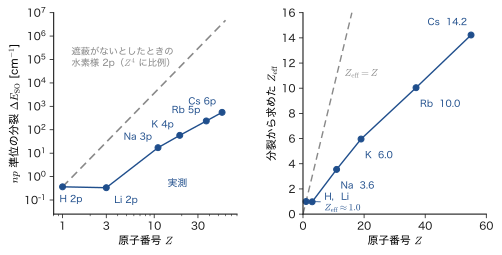
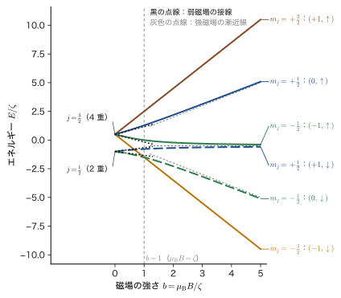
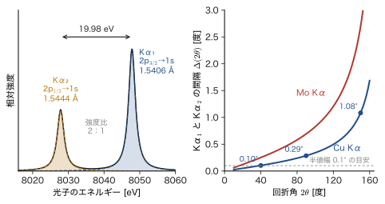

第26章スピン軌道相互作用の物理と磁場中の原子
粉末 X 線回折（XRD）の測定で，高角側の回折ピークが，根もとで 2 つに割れて見えたことはないだろうか．銅の管球から出る Cu Kα 線（L 殻の $2p$ 電子が K 殻の空孔に落ちるときに出る X 線）には，波長 $1.5406\ \text{Å}$ と $1.5444\ \text{Å}$ のごく近い 2 本の線が含まれており，同じ結晶面から少しずつ違う角度に回折されるからである．街灯に使われる低圧ナトリウムランプの黄色い光が，波長 $589.0\ \mathrm{nm}$ と $589.6\ \mathrm{nm}$ の 2 本の線（D 線）でできていることも，同じ仲間の現象である．
どちらも，電子の軌道運動とスピンがおたがいに影響しあうスピン軌道相互作用が，準位を 2 つに分けてしまうために現れる．前の章（第25章）では，この相互作用の形 $\hat{H}_{\mathrm{SO}}=\xi(r)\,\hat{\bm{L}}\cdot\hat{\bm{S}}$ をあらかじめ与えて，$\hat{\bm{L}}\cdot\hat{\bm{S}}$ の固有値問題を行列で解いた．この章では，その相互作用の物理を掘り下げる．(1) 電子は電場しかない原子の中にいるのに，なぜ磁気的な相互作用が現れるのか，(2) その大きさは原子番号 $Z$ とともにどう変わり，Na の D 線や Cu の Kα 線の分裂の大きさを説明できるのか，(3) 磁場をかけるとどうなるのか，を順に調べる．
古典物理（大学基礎物理学 AD 03）とのつながりは次のとおりである．動いている電荷は，動いている観測者から見ると，電場が磁場に，磁場が電場に混ざって見える（AD 03 第58章 58.7）．原子の中を回る電子から見れば，静止している原子核のほうが電子のまわりを回っており，その円電流が電子の位置に磁場をつくる．一方，電子のスピンは小さな磁石（磁気モーメント）なので，この磁場の中では $-\bm{\mu}\cdot\bm{B}$ のエネルギーをもつ．これがスピン軌道相互作用の正体である．
ところが，この古典的な見積りをそのまま計算すると，実験値の 2 倍になってしまう．食い違いを解決するのが Thomas の因子 $\tfrac12$（1926 年）で，電子の静止系が加速度運動しているという相対論的な効果である．この因子は，第XI部で学ぶ Dirac 方程式からは，何の仮定もなしに自然に出てくる．ここでは物理的な意味を述べるにとどめ，水素の微細構造の厳密な式（Dirac の公式）も，結果だけを予告する．
この章の後半では，磁場中の原子を扱う．弱い磁場では，全角運動量 $j$ の準位が Landé の $g_J$ 因子にしたがって分裂し（異常 Zeeman 効果），強い磁場では軌道とスピンが切り離されて別々に磁場に応答する（Paschen–Back 効果）．前の章で求めた $2p$ の $2\times2$ ブロックに Zeeman 項を加えるだけで，弱磁場から強磁場までの変化が正確に追える．
さらに，Cu Kα 線の二重線と XRD の分離角，X 線吸収の L 端の分岐比，そして磁性材料（希土類磁石）・ESR・トポロジカル絶縁体・りん光 OLED などでスピン軌道相互作用が果たす役割を，定性的に見渡す．この章の内容は，第V部（摂動論），第VII部（多電子原子と項記号），第VIII部（配位子場）で繰り返し使われる．
- 電子の静止系の磁場 $\bm{B}'=-\bm{v}\times\bm{E}/c^2$ から，$\bm{B}'=\dfrac{1}{e_0m_{\mathrm{e}}c^2r}\dfrac{\dd V}{\dd r}\bm{L}$ を導き，スピン磁気モーメントとの結合 $-\hat{\bm{\mu}}_s\cdot\bm{B}'$ に Thomas の因子 $\tfrac12$ を入れて，$\hat{H}_{\mathrm{SO}}=\xi(r)\hat{\bm{L}}\cdot\hat{\bm{S}}$，$\xi(r)=\dfrac{1}{2m_{\mathrm{e}}^2c^2}\dfrac1r\dfrac{\dd V}{\dd r}$ を得ること
- 水素様原子で $\xi(r)=\dfrac{Ze_0^2}{8\pi\varepsilon_0m_{\mathrm{e}}^2c^2r^3}$，$\expval{r^{-3}}$ から $\zeta_{nl}=\dfrac{\alpha^2E_{\mathrm{h}}Z^4}{2n^3l(l+\frac12)(l+1)}$ を導き，$Z^4$ 則と H の $2p$ 分裂 $10.95\ \mathrm{GHz}$ を説明すること
- Na・K・Rb・Cs の二重線から $\zeta_{np}$ と有効核電荷 $Z_{\mathrm{eff}}$ を求め，項記号 ${}^2S_{1/2}$，${}^2P_{1/2}$，${}^2P_{3/2}$ で D 線を整理すること．Dirac の微細構造式の位置づけ
- 射影定理と Clebsch–Gordan 係数の 2 通りの方法で Landé の $g_J$ を導き，Na の D1 線が 4 本，D2 線が 6 本に分かれる異常 Zeeman 効果を予言すること
- $2p$ の $6\times6$ 行列（$\hat{\bm{L}}\cdot\hat{\bm{S}}$ の $2\times2$ ブロックに Zeeman 項を加えたもの）を解き，弱磁場の傾き $g_Jm_j$ から強磁場の傾き $m_l+2m_s$ への変化（Paschen–Back 効果）と，境界の磁場 $\mu_{\mathrm{B}}B=\zeta$ を求めること
- Cu Kα$_1$，Kα$_2$ 線の波長 $1.5405929\ \text{Å}$，$1.5444274\ \text{Å}$ から分裂 $19.98\ \mathrm{eV}$ と強度比 $2:1$ を説明し，XRD での分離角，L 吸収端の分岐比，XPS の二重線の面積比を見積もること
- 材料の中のスピン軌道相互作用（$g$ 値のずれ，spin-only と $g_J$ の磁気モーメント，磁気異方性，トポロジカル絶縁体，Rashba 分裂，りん光）を定性的に述べること
もとにしたノート：本章はノートにない内容を補った章である．関連するノート：望月泰英『物理学ノート 量子力学3』 p. 2（Zeeman 効果とスピン），pp. 11–18（スピン軌道相互作用）．
26.1 静止系の磁場と Thomas 因子 — スピン軌道相互作用の起源
26.1.1 電場しかない原子の中で，なぜ磁気的な相互作用が現れるのか
原子の中の電子が感じる力は，原子核（電荷 $+Ze_0$）がつくる電場 $\bm{E}$（と，ほかの電子との間の静電気力）だけである．原子核は動かず，磁場をつくらない（核スピンによる超微細構造は，ここでは考えない）．つまり，原子核の静止系（実験室系）には磁場がなく，あるのは電場だけである．ところが，電子は速度 $\bm{v}$ で動いている．電子と一緒に動く観測者（電子の静止系）から見ると，電場と磁場は混ざりあって見える．これは AD 03（第58章 58.7）で Lorentz 変換から導いた結果である．速さ $v$ が光速 $c$ よりずっと小さいとき（$\gamma\simeq1$），その結果は次の形になる．
公式26.1 動く観測者から見た電場と磁束密度（$v\ll c$）
実験室系の電場・磁束密度を $\bm{E},\bm{B}$，実験室系に対して速度 $\bm{v}$ で動く観測者の見る電場・磁束密度を $\bm{E}',\bm{B}'$ とすると，$v\ll c$ で
\begin{equation} \bm{E}'\simeq\bm{E}+\bm{v}\times\bm{B},\qquad \bm{B}'\simeq\bm{B}-\frac{\bm{v}\times\bm{E}}{c^2} \label{eq:26-EBtrans} \end{equation}である．とくに実験室系に磁場がない（$\bm{B}=\bm{0}$）ときは，動く観測者は
\begin{equation} \bm{B}'=-\frac{\bm{v}\times\bm{E}}{c^2} \label{eq:26-Bprime0} \end{equation}という磁場を見る．
次元を確かめておこう．$vE/c^2$ の単位は $\mathrm{(m/s)(V/m)/(m/s)^2}=\mathrm{V\,s/m^2}=\mathrm{T}$ で，磁束密度の単位に一致する．式 \eqref{eq:26-Bprime0} の意味は，「電場の中を横切って動くと，動いている側には磁場が現れる」ということである．第23章で見たように，回る電荷は円電流になって，回転の中心に磁場をつくる．電子から見ると，原子核のほうが電子のまわりを回っている．その円電流が電子の位置につくる磁場が，$\bm{B}'$ である（図26.1）．
26.1.2 中心力の電場と軌道角運動量 — 静止系の磁場
電子のポテンシャルエネルギーを $V(r)$ とする（原子核との Coulomb 引力では $V(r)=-Ze_0^2/(4\pi\varepsilon_0r)$．多電子原子では，ほかの電子の遮蔽を含む有効ポテンシャルを $V(r)$ と考えてもよい）．電子（電荷 $-e_0$）が受ける力は $\bm{F}=-\nabla V=-\dfrac{\dd V}{\dd r}\dfrac{\bm{r}}{r}$ であり，これは電場 $\bm{E}$ による力 $-e_0\bm{E}$ に等しいので，電場は
\begin{equation} \bm{E}=\frac{1}{e_0}\frac{\dd V}{\dd r}\frac{\bm{r}}{r} \label{eq:26-Ecentral} \end{equation}と書ける．Coulomb ポテンシャルなら $\dd V/\dd r=Ze_0^2/(4\pi\varepsilon_0r^2)$ で，$\bm{E}=\dfrac{Ze_0}{4\pi\varepsilon_0r^2}\dfrac{\bm{r}}{r}$ となり，正電荷 $+Ze_0$ の核から外向きに広がる，見慣れた電場になっている．
導出：電子の静止系の磁場 $\bm{B}'$
式 \eqref{eq:26-Ecentral} を式 \eqref{eq:26-Bprime0} に代入する．$\bm{E}$ は $\bm{r}$ に比例しているので，外積 $\bm{v}\times\bm{E}$ の中の $\bm{v}\times\bm{r}$ だけを計算すればよい．
$$ \bm{B}'=-\frac{1}{c^2}\,\bm{v}\times\bm{E}=-\frac{1}{e_0c^2}\frac{1}{r}\frac{\dd V}{\dd r}\,(\bm{v}\times\bm{r}). $$ここで，外積は順序を入れ替えると符号が変わる（$\bm{v}\times\bm{r}=-\bm{r}\times\bm{v}$）こと，および電子（質量 $m_{\mathrm{e}}$）の軌道角運動量が $\bm{L}=\bm{r}\times\bm{p}=m_{\mathrm{e}}\,\bm{r}\times\bm{v}$ であることを使うと，$\bm{v}\times\bm{r}=-\bm{r}\times\bm{v}=-\bm{L}/m_{\mathrm{e}}$ となる．したがって
\begin{equation} \bm{B}'=\frac{1}{e_0m_{\mathrm{e}}c^2}\frac1r\frac{\dd V}{\dd r}\,\bm{L} \label{eq:26-Bprime} \end{equation}を得る．引力のポテンシャルでは $\dd V/\dd r\gt0$ なので，$\bm{B}'$ は軌道角運動量 $\bm{L}$ と同じ向きである．
（導出終わり）
式 \eqref{eq:26-Bprime} は，「$\bm{B}'$ の大きさは軌道角運動量に比例する」という，この章でいちばん大事な結論である．スピンの向きを $\bm{L}$ に対して変えるとエネルギーが変わる，つまり $\hat{\bm{L}}\cdot\hat{\bm{S}}$ の形の相互作用になる根拠が，ここにある．
考察：この磁場は，第23章の円電流の磁場と同じもの
Bohr 模型（$n=1$，半径 $a_0$，速さ $v=\alpha c$）の電子について，式 \eqref{eq:26-Bprime0} の大きさを調べよう．核の電場は $E=e_0/(4\pi\varepsilon_0a_0^2)=5.14\times10^{11}\ \mathrm{V/m}$ で，$\bm{v}\perp\bm{E}$ だから
$$ B'=\frac{vE}{c^2}=\frac{\alpha\,E}{c}=\frac{(7.297\times10^{-3})(5.142\times10^{11}\ \mathrm{V/m})}{2.998\times10^{8}\ \mathrm{m/s}}=12.5\ \mathrm{T} $$となる．これは第23章の例題23.1 で，電子が半径 $a_0$ の円を回る円電流（$I=e_0v/2\pi a_0$）が核の位置につくる磁束密度 $B=\mu_0I/(2a_0)$ として求めた $12.5\ \mathrm{T}$ と同じ値である．実際，$\mu_0=1/(\varepsilon_0c^2)$ を使うと，$B'=\dfrac{v}{c^2}\dfrac{e_0}{4\pi\varepsilon_0a_0^2}=\dfrac{\mu_0e_0v}{4\pi a_0^2}$ で，$B=\dfrac{\mu_0}{2a_0}\dfrac{e_0v}{2\pi a_0}=\dfrac{\mu_0e_0v}{4\pi a_0^2}$ と一致する．電子から核を見ても，核から電子を見ても，「相対的に回っている電荷が，回転の中心につくる磁場」であることには変わりがない．原子の中には，実験室の電磁石（数 T）を大きく超える磁場が「自前で」できているのである．
26.1.3 スピンの磁気モーメントと磁場 $\bm{B}'$ の結合
電子のスピンには磁気モーメント $\hat{\bm{\mu}}_s=-g_s\mu_{\mathrm{B}}\hat{\bm{S}}/\hbar=-\dfrac{g_se_0}{2m_{\mathrm{e}}}\hat{\bm{S}}$ が伴う（第23章 23.3.6．$g_s\approx2.0023$．電子の負電荷のために，磁気モーメントはスピンと逆向きである）．磁場 $\bm{B}'$ の中での磁気モーメントのエネルギー $-\hat{\bm{\mu}}_s\cdot\bm{B}'$ に式 \eqref{eq:26-Bprime} を代入すると，
\begin{equation} -\hat{\bm{\mu}}_s\cdot\bm{B}'=\frac{g_se_0}{2m_{\mathrm{e}}}\,\hat{\bm{S}}\cdot\bm{B}' =\frac{g_s}{2}\,\frac{1}{m_{\mathrm{e}}^2c^2}\frac1r\frac{\dd V}{\dd r}\,\hat{\bm{L}}\cdot\hat{\bm{S}} \label{eq:26-Hnaive} \end{equation}となる．ここで，$\bm{L}$ を演算子 $\hat{\bm{L}}$ に置き換えた．スピン $\hat{\bm{S}}$ が軌道角運動量 $\hat{\bm{L}}$ と平行なら $\hat{\bm{L}}\cdot\hat{\bm{S}}\gt0$ で，$\dd V/\dd r\gt0$ のときエネルギーは高くなる．磁気モーメントは $\hat{\bm{S}}$ と逆向き，つまり $\bm{B}'$ とも逆向きになるので，磁場の中で不利な向きだからである．
26.1.4 食い違いと Thomas の因子 $\tfrac12$
式 \eqref{eq:26-Hnaive} に $g_s=2$ を入れると，係数は $\dfrac{1}{m_{\mathrm{e}}^2c^2}\dfrac1r\dfrac{\dd V}{\dd r}$ になる．ところが，アルカリ原子の二重線の間隔（26.3 節）を説明するには，この係数を半分にしなければならない．1925 年に電子スピンを提案した Uhlenbeck と Goudsmit は，この「2 倍の食い違い」に悩んだ．1926 年に L. H. Thomas が，静止系を取り替えるときの相対論的な効果を見落としていたことを指摘して，この食い違いを解決した．
イメージ：Thomas 歳差 — 電子の静止系は「回っている」
式 \eqref{eq:26-Bprime0} を出したときは，電子の静止系を 1 つの慣性系として扱った．ところが，原子の中の電子は円運動（加速度運動）をしているので，電子の静止系は慣性系ではない．電子の各瞬間の速度に合わせた慣性系を次々と乗り換えていくと，向きの違う 2 回の Lorentz 変換（ブースト）を続けたものは，1 回のブーストでは表せず，回転を含む（相対論のThomas–Wigner 回転）．その結果，電子の静止系の座標軸は，実験室系から見て角速度
\begin{equation} \bm{\Omega}_{\mathrm{T}}=\frac{\gamma^2}{\gamma+1}\,\frac{\bm{a}\times\bm{v}}{c^2}\ \simeq\ \frac{\bm{a}\times\bm{v}}{2c^2}\qquad(v\ll c) \label{eq:26-omegaT} \end{equation}で回転する．$\bm{a}$ は電子の加速度である．これを Thomas 歳差という．中心力では $\bm{a}=-\dfrac{1}{m_{\mathrm{e}}}\dfrac1r\dfrac{\dd V}{\dd r}\bm{r}$ なので，$\bm{a}\times\bm{v}=-\dfrac{1}{m_{\mathrm{e}}}\dfrac1r\dfrac{\dd V}{\dd r}(\bm{r}\times\bm{v})=-\dfrac{1}{m_{\mathrm{e}}^2}\dfrac1r\dfrac{\dd V}{\dd r}\bm{L}$ となり，
$$ \bm{\Omega}_{\mathrm{T}}=-\frac{1}{2m_{\mathrm{e}}^2c^2}\frac1r\frac{\dd V}{\dd r}\,\bm{L} $$である．一方，磁場 $\bm{B}'$ の中でスピンは $\bm{\Omega}_{B}=\dfrac{g_se_0}{2m_{\mathrm{e}}}\bm{B}'=\dfrac{g_s}{2}\dfrac{1}{m_{\mathrm{e}}^2c^2}\dfrac1r\dfrac{\dd V}{\dd r}\bm{L}$ の角速度で歳差運動する（式 \eqref{eq:26-Hnaive} の $\hat{\bm{S}}$ の係数）．スピンの向きは電子の静止系の座標軸に対して測るので，軸そのものが実験室系に対して $\bm{\Omega}_{\mathrm{T}}$ で回っていれば，実験室系から見た歳差はその分だけ変わる．円軌道では $\bm{a}$ が内向き，$\bm{v}$ が接線向きなので $\bm{a}\times\bm{v}$ は $\bm{L}$ と逆向きで，Thomas 歳差は軌道運動と逆回りである（このため磁場による歳差を弱める）．したがって，実験室系から見たスピンの歳差運動の角速度は，この 2 つの和 $\bm{\Omega}_B+\bm{\Omega}_{\mathrm{T}}$ で，$\hat{\bm{S}}$ との積 $(\bm{\Omega}_B+\bm{\Omega}_{\mathrm{T}})\cdot\hat{\bm{S}}$ がエネルギーになる．$g_s=2$ なら係数は $\bigl(1-\tfrac12\bigr)\dfrac{1}{m_{\mathrm{e}}^2c^2}\dfrac1r\dfrac{\dd V}{\dd r}$，すなわち式 \eqref{eq:26-Hnaive} のちょうど半分になる（一般の $g_s$ では係数が $(g_s-1)/2$ となり，$g_s=2.0023$ では $0.2\ \%$ ほど大きくなる．これが，26.2 節の水素の $2p$ 分裂の実測値が計算値より約 $0.2\ \%$ 大きい原因の 1 つである）．
Thomas 歳差の式 \eqref{eq:26-omegaT} の導出は，特殊相対論（Lorentz 変換の合成）の少し込み入った計算を要するので省く．第XI部で学ぶ Dirac 方程式を非相対論的極限に展開すると，静止系の乗り換えなどを考えなくても，$g_s=2$ と，この因子 $\tfrac12$ を含んだスピン軌道相互作用が自動的に出てくる（第63章）．関連シミュレーターのRelativistic-QM の解説 §4にも，Dirac 方程式に最小結合を入れて $g=2$ とスピン軌道項が出てくる様子が書かれている．
26.1.5 スピン軌道相互作用のハミルトニアン
法則26.1 スピン軌道相互作用
中心力ポテンシャル $V(r)$ の中の電子（質量 $m_{\mathrm{e}}$）には，運動と電磁場の相対論的な効果として，次のスピン軌道相互作用がはたらく．
\begin{equation} \hat{H}_{\mathrm{SO}}=\xi(r)\,\hat{\bm{L}}\cdot\hat{\bm{S}},\qquad \xi(r)=\frac{1}{2m_{\mathrm{e}}^2c^2}\frac1r\frac{\dd V}{\dd r} \label{eq:26-HSO} \end{equation}因子 $\dfrac12$ は Thomas 歳差によるもの（$g_s=2$ のとき，式 \eqref{eq:26-Hnaive} の半分）である．前章で $\hat{H}_{\mathrm{SO}}=\xi(r)\hat{\bm{L}}\cdot\hat{\bm{S}}$ と書いたのは，この式である．$\xi(r)$ は $[\mathrm{J}/(\mathrm{J\,s})^2]$ の次元をもち，$\xi(r)\hat{\bm{L}}\cdot\hat{\bm{S}}$ がエネルギーの次元になる．
次元を確かめよう．$\dfrac{1}{m_{\mathrm{e}}^2c^2}\dfrac1r\dfrac{\dd V}{\dd r}$ の単位は $\dfrac{1}{\mathrm{kg^2\,m^2s^{-2}}}\cdot\dfrac{\mathrm{J}}{\mathrm{m^2}}=\dfrac{\mathrm{J}}{\mathrm{kg^2\,m^4s^{-2}}}$ で，$\hat{\bm{L}}\cdot\hat{\bm{S}}$ の単位 $\mathrm{(J\,s)^2}$ をかけると，$\mathrm{J^3s^4/(kg^2m^4)}=\mathrm{J}\cdot(\mathrm{kg\,m^2s^{-2}})^2\mathrm{s^4}/(\mathrm{kg^2m^4})=\mathrm{J}$ となって，エネルギーの次元に一致する．
注意：符号と，原子核の中のスピン軌道相互作用
原子内の電子では，核の引力のために $\dd V/\dd r\gt0$，したがって $\xi(r)\gt0$ である．$\hat{\bm{L}}\cdot\hat{\bm{S}}$ の固有値は $j=l+\tfrac12$（$\bm{L}$ と $\bm{S}$ がおよそ平行）で正，$j=l-\tfrac12$（およそ反平行）で負だから（前章で求めた固有値），エネルギーは $j=l+\tfrac12$ の準位のほうが高い．「引力ポテンシャルの中では，スピンが軌道と平行な状態が高い」と覚えておくとよい．なお，原子核の中の核子のスピン軌道相互作用（Mayer と Jensen の殻模型，1949 年）は，強い力によるもので，符号が逆で，$j=l+\tfrac12$ のほうが低い．原子の場合と混同しないこと．
例題26.1 Bohr 模型の $n=2$ の電子がスピン軌道相互作用でうける磁場とエネルギー
Bohr 模型で，水素原子の $n=2$ の円軌道（半径 $r=4a_0$，速さ $v=\alpha c/2$）の電子が，電子の静止系で受ける磁束密度 $B'$ と，$\mu_{\mathrm{B}}B'$（$\mu_{\mathrm{B}}=5.788\times10^{-5}\ \mathrm{eV/T}$）を求めよ．また，スピンの向きを反転させるときのエネルギー変化 $g_s\mu_{\mathrm{B}}B'\times\tfrac12$（Thomas の因子を含む）を求め，水素の $2p$ 準位の実際の分裂 $4.53\times10^{-5}\ \mathrm{eV}$（26.2 節）と比べよ．
解答 $n=2$ では $r=n^2a_0=4a_0$，$v=\alpha c/n=\alpha c/2=1.094\times10^{6}\ \mathrm{m/s}$．核の電場の大きさは，$n=1$ の値 $5.142\times10^{11}\ \mathrm{V/m}$ の $1/4^2$ で
$$ E=\frac{e_0}{4\pi\varepsilon_0(4a_0)^2}=\frac{5.142\times10^{11}\ \mathrm{V/m}}{16}=3.214\times10^{10}\ \mathrm{V/m}. $$$\bm{v}\perp\bm{E}$ だから，式 \eqref{eq:26-Bprime0} の大きさは
$$ B'=\frac{vE}{c^2}=\frac{(1.094\times10^{6}\ \mathrm{m/s})(3.214\times10^{10}\ \mathrm{V/m})}{(2.998\times10^{8}\ \mathrm{m/s})^2}=0.391\ \mathrm{T} $$である（$n=1$ の $12.5\ \mathrm{T}$ の $1/32$ になる：$B'\propto vE\propto n^{-1}\cdot n^{-4}$ で $1/2^5=1/32$）．したがって
$$ \mu_{\mathrm{B}}B'=(5.788\times10^{-5}\ \mathrm{eV/T})(0.391\ \mathrm{T})=2.26\times10^{-5}\ \mathrm{eV}. $$スピンの向きを反転させる（$\hat{\bm{S}}\cdot\bm{B}'$ の符号を変える）と，$g_s=2$ で磁気モーメントのエネルギーは $2\mu_{\mathrm{B}}B'$ だけ変わる．Thomas の因子 $\tfrac12$ を掛けて
$$ \Delta E=\frac12\,g_s\mu_{\mathrm{B}}B'=\mu_{\mathrm{B}}B'=2.26\times10^{-5}\ \mathrm{eV} $$を得る．水素の $2p$ の実際の分裂 $4.53\times10^{-5}\ \mathrm{eV}$ とは同じ桁で，約 2 倍の差である．この差は，Bohr 模型と量子力学の描像の違いによる．Bohr 模型では $n=2$ の円軌道に $L=2\hbar$ と $r^{-3}=1/(64a_0^3)$ を割り当てるが，量子力学の $2p$ は $l=1$（$\sqrt{l(l+1)}\,\hbar=1.41\hbar$）で，電子が軌道全体に広がるために $\expval{r^{-3}}=1/(24a_0^3)$ と，円軌道の値の $2.7$ 倍になる（核に近い部分の寄与が大きい）．これらを合わせると，$\bigl(\tfrac32\cdot\tfrac{1}{24}\bigr)\big/\bigl(2\cdot\tfrac{1}{64}\bigr)=2$ 倍の差になる．この例題の目的は，$B'$ が $L$ に比例するという定性的な確認と，大きさの桁の確認である．また，$\Delta E$ は $n=2$ の束縛エネルギー $3.4\ \mathrm{eV}$ の $7\times10^{-6}$ 倍にすぎない．スピン軌道相互作用は，準位の位置に比べてごくわずかな補正（微細構造）であり，摂動として扱ってよい．
26.2 水素様原子のスピン軌道分裂と $Z^4$ 則
26.2.1 Coulomb ポテンシャルでの $\xi(r)$
水素様原子（核電荷 $+Ze_0$，電子 1 個）では $V(r)=-\dfrac{Ze_0^2}{4\pi\varepsilon_0r}$ である．これを微分すると $\dfrac{\dd V}{\dd r}=\dfrac{Ze_0^2}{4\pi\varepsilon_0r^2}$ で，$\dfrac1r\dfrac{\dd V}{\dd r}=\dfrac{Ze_0^2}{4\pi\varepsilon_0r^3}$ だから，式 \eqref{eq:26-HSO} の $\xi(r)$ は
\begin{equation} \xi(r)=\frac{1}{2m_{\mathrm{e}}^2c^2}\cdot\frac{Ze_0^2}{4\pi\varepsilon_0r^3}=\frac{Ze_0^2}{8\pi\varepsilon_0m_{\mathrm{e}}^2c^2}\,\frac{1}{r^3} \label{eq:26-xi-coul} \end{equation}となる．$\xi(r)$ は $r^{-3}$ に比例して，核に近づくほど急に大きくなる．スピン軌道相互作用は，電子が核の近くにいるときに主にはたらく相互作用である．$r\to0$ で $\xi\to\infty$ となるが，$s$ 軌道（$l=0$）では $\hat{\bm{L}}=\bm{0}$ なので $\hat{H}_{\mathrm{SO}}=0$ となり，問題は起きない．$l\ge1$ の軌道では，動径関数が原点付近で $R_{nl}\sim r^l$ と小さいため，$r^{-3}R_{nl}^2\,r^2\sim r^{2l-1}$ の積分は収束する．
26.2.2 動径方向の平均 $\expval{r^{-3}}$
1 次の摂動としてのスピン軌道相互作用のエネルギーは，$\xi(r)$ の動径関数 $R_{nl}(r)$ による平均で決まる（前章 25.7.3 節：$\zeta_{nl}\equiv\hbar^2\int_0^\infty\xi(r)R_{nl}(r)^2r^2\,\dd r$）．式 \eqref{eq:26-xi-coul} の $r^{-3}$ の平均は，第17章 17.8 節の公式17.7 で求めてある：
\begin{equation} \expval{r^{-3}}_{nl}=\int_0^\infty R_{nl}(r)^2\,r^{-3}\,r^2\,\dd r=\frac{Z^3}{n^3\,l\bigl(l+\tfrac12\bigr)(l+1)\,a_0^3}\qquad(l\ge1) \label{eq:26-r3} \end{equation}ここでは，$2p$ 軌道で直接に確かめておく．規格化された動径関数は $R_{21}(r)=\dfrac{1}{2\sqrt6}\,a_0^{-3/2}\dfrac{r}{a_0}\,e^{-r/2a_0}$（$Z=1$）で，$R_{21}^2=\dfrac{1}{24}a_0^{-3}\dfrac{r^2}{a_0^2}e^{-r/a_0}$ である．したがって
$$ \expval{r^{-3}}_{2p}=\frac{1}{24\,a_0^{5}}\int_0^\infty r^{2}\,e^{-r/a_0}\,r^{-3}\,r^2\,\dd r=\frac{1}{24\,a_0^{5}}\int_0^\infty r\,e^{-r/a_0}\,\dd r=\frac{1}{24\,a_0^{5}}\cdot a_0^2=\frac{1}{24\,a_0^3} $$となる（$\int_0^\infty re^{-r/a_0}\dd r=a_0^2$．規格化も $\int_0^\infty R_{21}^2r^2\dd r=\dfrac{1}{24a_0^5}\int_0^\infty r^4e^{-r/a_0}\dd r=\dfrac{24a_0^5}{24a_0^5}=1$ と確かめられる）．式 \eqref{eq:26-r3} で $n=2$，$l=1$，$Z=1$ とすると，$\dfrac{1}{8\cdot1\cdot\frac32\cdot2\,a_0^3}=\dfrac{1}{24a_0^3}$ で一致する．
26.2.3 結合定数 $\zeta_{nl}$ の公式
定理26.1 水素様原子のスピン軌道結合定数
核電荷 $Z$ の水素様原子の状態 $(n,l)$（$l\ge1$）のスピン軌道結合定数は
\begin{equation} \zeta_{nl}=\hbar^2\expval{\xi}=\frac{\alpha^2E_{\mathrm{h}}\,Z^4}{2\,n^3\,l\bigl(l+\tfrac12\bigr)(l+1)} \label{eq:26-zeta} \end{equation}である．$\alpha$ は微細構造定数，$E_{\mathrm{h}}$ は Hartree エネルギー（$E_{\mathrm{h}}=27.211\,386\ \mathrm{eV}$）である．
導出
式 \eqref{eq:26-xi-coul} と式 \eqref{eq:26-r3} から
$$ \zeta_{nl}=\hbar^2\,\frac{Ze_0^2}{8\pi\varepsilon_0m_{\mathrm{e}}^2c^2}\,\expval{r^{-3}} =\frac{\hbar^2Ze_0^2}{8\pi\varepsilon_0m_{\mathrm{e}}^2c^2}\cdot\frac{Z^3}{a_0^3\,n^3l(l+\frac12)(l+1)} . $$係数を，微細構造定数 $\alpha=\dfrac{e_0^2}{4\pi\varepsilon_0\hbar c}$，Bohr 半径 $a_0=\dfrac{4\pi\varepsilon_0\hbar^2}{m_{\mathrm{e}}e_0^2}=\dfrac{\hbar}{m_{\mathrm{e}}c\,\alpha}$，Hartree エネルギー $E_{\mathrm{h}}=\dfrac{\hbar^2}{m_{\mathrm{e}}a_0^2}=\alpha^2m_{\mathrm{e}}c^2$ で書き直す．まず $\dfrac{e_0^2}{8\pi\varepsilon_0}=\dfrac12\alpha\hbar c$ より
$$ \frac{\hbar^2Ze_0^2}{8\pi\varepsilon_0m_{\mathrm{e}}^2c^2a_0^3}=\frac{Z\alpha\,\hbar^3}{2\,m_{\mathrm{e}}^2c\,a_0^3}. $$ここで $\dfrac{1}{a_0^3}=\dfrac{m_{\mathrm{e}}^3c^3\alpha^3}{\hbar^3}$ を代入すると，$\hbar^3$ が消えて
$$ \frac{Z\alpha\,\hbar^3}{2m_{\mathrm{e}}^2c}\cdot\frac{m_{\mathrm{e}}^3c^3\alpha^3}{\hbar^3}=\frac{Z\alpha^4\,m_{\mathrm{e}}c^2}{2}=\frac{Z\alpha^2}{2}\,E_{\mathrm{h}} $$となる（最後に $\alpha^2m_{\mathrm{e}}c^2=E_{\mathrm{h}}$）．残りの因子 $\dfrac{Z^3}{n^3l(l+\frac12)(l+1)}$ を掛けると，式 \eqref{eq:26-zeta} を得る．
（導出終わり）
数値の基準になる量は $\alpha^2E_{\mathrm{h}}=1.4490\times10^{-3}\ \mathrm{eV}=11.687\ \mathrm{cm^{-1}}$（振動数で $350.4\ \mathrm{GHz}$）である．$\alpha^2E_{\mathrm{h}}=\alpha^4m_{\mathrm{e}}c^2$ なので，スピン軌道相互作用は $\alpha^4$ に比例する．これが，微細構造が Bohr の準位（$\propto\alpha^2m_{\mathrm{e}}c^2$）よりも $\alpha^2\approx5\times10^{-5}$ 倍だけ小さい理由である．次元の確認：$\alpha$ は無次元で，$\zeta_{nl}$ はエネルギー $E_{\mathrm{h}}$ の次元をもつ．
26.2.4 準位の分裂
前章の式（25.7.3 節）から，スピン軌道相互作用による準位のずれは
\begin{equation} E_{\mathrm{SO}}(j)=\frac{\zeta_{nl}}{2}\Bigl[j(j+1)-l(l+1)-\tfrac34\Bigr]= \begin{cases} +\dfrac{l}{2}\,\zeta_{nl}&(j=l+\tfrac12)\\[3mm] -\dfrac{l+1}{2}\,\zeta_{nl}&(j=l-\tfrac12) \end{cases} \label{eq:26-ESO} \end{equation}で，2 つの準位の間隔は $\bigl(l+\tfrac12\bigr)\zeta_{nl}$ である．式 \eqref{eq:26-zeta} を使うと，この間隔はきれいな形になる．
\begin{equation} \Delta_{\mathrm{SO}}(nl)\equiv E(j=l+\tfrac12)-E(j=l-\tfrac12)=\Bigl(l+\tfrac12\Bigr)\zeta_{nl}=\frac{\alpha^2E_{\mathrm{h}}\,Z^4}{2\,n^3\,l\,(l+1)} \label{eq:26-FS} \end{equation}表26.1 に，水素（$Z=1$）の値をまとめる．同じ $n$ でも $l$ が大きいほど分裂は小さく，同じ $l$ では $n^{-3}$ に比例して小さくなる．どちらも，電子が核の近くにいる確率が小さくなるためである（$\expval{r^{-3}}$ が小さい）．
| 状態 | $\zeta_{nl}$（$\alpha^2E_{\mathrm{h}}$ 単位） | $\zeta_{nl}$ [$\mu\mathrm{eV}$] | 間隔 $\Delta_{\mathrm{SO}}$ [$\mathrm{cm^{-1}}$] | 間隔 $\Delta_{\mathrm{SO}}/h$ [$\mathrm{GHz}$] |
|---|---|---|---|---|
| $2p$ | $\dfrac{1}{48}$ | $30.19$ | $0.3652$ | $10.95$ |
| $3p$ | $\dfrac{1}{162}$ | $8.945$ | $0.1082$ | $3.244$ |
| $3d$ | $\dfrac{1}{810}$ | $1.789$ | $0.03607$ | $1.081$ |
| $4f$ | $\dfrac{1}{5376}$ | $0.2695$ | $0.007609$ | $0.2281$ |
26.2.5 $Z^4$ 則
イメージ：なぜ $Z^4$ に比例するのか
核電荷が $Z$ 倍になると，(i) 電子はより強く引かれて軌道が $1/Z$ に縮むので，$\expval{r^{-3}}$ は $Z^3$ 倍になる（第18章のスケーリング）．(ii) さらに，核の電場そのものが $Z$ 倍になるので，$\xi(r)\propto Z$ である．合わせて $Z\times Z^3=Z^4$ で，重い元素の内殻電子ほど，スピン軌道分裂は急激に大きくなる（26.6 節）．束縛エネルギー $|E_n|\propto Z^2$ との比 $\Delta_{\mathrm{SO}}/|E_n|$ は $Z^2$ に比例し，実は $(Zv_1/c)^2=(Z\alpha)^2$ のオーダーである（$v_1=\alpha c$ は Bohr 模型の $n=1$ の速さ）．スピン軌道相互作用は，電子の速さ $v$ と光速 $c$ の比 $(v/c)^2$ で決まる相対論的な効果である．水素の $2p$ では $\Delta_{\mathrm{SO}}/|E_2|=\alpha^2/4=1.33\times10^{-5}$ ときわめて小さいが，$Z=29$（Cu）の $2p$ 電子では，水素様の式で $(Z\alpha)^2/4=1.1\times10^{-2}$ となり，水素の約 $8\times10^2$ 倍（$Z^2=841$ 倍）で，もはや小さな補正とは言いにくい（26.6 節）．
例題26.2 水素の $2p$ 分裂と，水素様イオンの $Z^4$ 倍
水素原子の $2p$ 状態について，(1) $\zeta_{2p}$，(2) $2p_{3/2}$ と $2p_{1/2}$ の間隔 $\Delta_{\mathrm{SO}}$ を eV，$\mathrm{cm^{-1}}$，$\mathrm{GHz}$ で求めよ．(3) $\mathrm{He^+}$（$Z=2$）と $\mathrm{Li^{2+}}$（$Z=3$）の $2p$ の間隔は何倍になるか．（$\alpha^2E_{\mathrm{h}}=1.4490\times10^{-3}\ \mathrm{eV}$，$1\ \mathrm{eV}=8065.5\ \mathrm{cm^{-1}}=2.4180\times10^{14}\ \mathrm{Hz}$）
解答 (1) 式 \eqref{eq:26-zeta} で $n=2$，$l=1$，$Z=1$：$2n^3l(l+\tfrac12)(l+1)=2\cdot8\cdot1\cdot\tfrac32\cdot2=48$ だから
$$ \zeta_{2p}=\frac{\alpha^2E_{\mathrm{h}}}{48}=\frac{1.4490\times10^{-3}\ \mathrm{eV}}{48}=3.02\times10^{-5}\ \mathrm{eV}. $$(2) 間隔は $\Delta_{\mathrm{SO}}=\tfrac32\zeta_{2p}=\dfrac{\alpha^2E_{\mathrm{h}}}{32}$（式 \eqref{eq:26-FS} で $2n^3l(l+1)=2\cdot8\cdot1\cdot2=32$）で，
$$ \Delta_{\mathrm{SO}}=\frac{1.4490\times10^{-3}\ \mathrm{eV}}{32}=4.53\times10^{-5}\ \mathrm{eV}=0.365\ \mathrm{cm^{-1}}=(4.53\times10^{-5})(2.4180\times10^{14})\ \mathrm{Hz}=1.095\times10^{10}\ \mathrm{Hz}=10.95\ \mathrm{GHz}. $$実測の $2P_{3/2}$–$2P_{1/2}$ の間隔は約 $10.97\ \mathrm{GHz}$ で，$0.2\ \%$ ほどの差は，電子の $g_s$ が $2$ からずれること（$g_s=2.0023$）や Lamb シフトなどの量子電磁力学の補正による．各準位のずれは，式 \eqref{eq:26-ESO} より $E(2p_{3/2})=+\tfrac12\zeta=+1.51\times10^{-5}\ \mathrm{eV}$，$E(2p_{1/2})=-\zeta=-3.02\times10^{-5}\ \mathrm{eV}$ で，縮重度で重みを付けた重心は $4\times\tfrac12\zeta+2\times(-\zeta)=0$ と保たれる．
(3) $\Delta_{\mathrm{SO}}\propto Z^4$ なので，$\mathrm{He^+}$ は $2^4=16$ 倍，$\mathrm{Li^{2+}}$ は $3^4=81$ 倍である．$\mathrm{He^+}$：$16\times0.365\ \mathrm{cm^{-1}}=5.84\ \mathrm{cm^{-1}}$（$175\ \mathrm{GHz}$，$0.72\ \mathrm{meV}$），$\mathrm{Li^{2+}}$：$81\times0.365\ \mathrm{cm^{-1}}=29.6\ \mathrm{cm^{-1}}$（$887\ \mathrm{GHz}$，$3.7\ \mathrm{meV}$）．いずれも $|E_2|=13.6\,Z^2/4\ \mathrm{eV}$ に比べれば，$Z^2\alpha^2/4$ という小さな割合である．
関連シミュレーター：水素原子（$p$，$d$ 軌道の形と，水素様原子のエネルギー準位）．
26.3 微細構造とアルカリ原子の二重線
26.3.1 $j$ による準位の分類 — 項記号 ${}^2S_{1/2}$，${}^2P_{1/2}$，${}^2P_{3/2}$
1 個の電子の状態 $nl$ は，スピン軌道相互作用のために，$j=l+\tfrac12$ と $j=l-\tfrac12$ の 2 つの準位に分かれる（$s$ 軌道は $j=\tfrac12$ の 1 つだけ）．この準位を分光学では，第25章の表25.1 のように 項記号 ${}^{2S+1}L_J$ で書く．1 電子ではスピンが $S=\tfrac12$ なので左上の数は $2S+1=2$（二重項），大文字の $L=S,P,D,F,\ldots$ は $l=0,1,2,3,\ldots$ に，右下は全角運動量 $j$ に対応する（ここで「${}^2S$」の $S$ は $l=0$ を表す記号で，スピンの $S$ とは別である）．たとえば
- $3s$：${}^2S_{1/2}$（$2$ 状態）
- $3p$：${}^2P_{1/2}$（$2$ 状態）と ${}^2P_{3/2}$（$4$ 状態）— 合計 $6$ 状態は，分裂前の $3p$ 準位の状態数 $2(2l+1)=6$ に等しい
- $3d$：${}^2D_{3/2}$（$4$ 状態）と ${}^2D_{5/2}$（$6$ 状態）
となる．一般に，準位 $j$ は $(2j+1)$ 重に縮退している（磁場のないとき）．
26.3.2 Na の D 線
Na 原子は，$1s^22s^22p^6$ の閉殻の外に $3s$ 電子が 1 個ある．スピンを考えず，軌道だけで説明する描像では，$3p$ 準位は $m=-1,0,+1$ の 3 重に縮退した 1 つの準位で，$3p\to3s$ の遷移は 1 本の線になるはずである（第23章で見たように，これでは実験と合わない）．$3s$ 電子が $3p$ に励起され，$3s$ に戻るときに出す光が Na の D 線である（太陽光スペクトルの暗線として Fraunhofer が D と名づけたものと同じ線で，ナトリウムランプの黄色い光でもある）．$3s\,{}^2S_{1/2}$ は分裂しないが，$3p$ は ${}^2P_{1/2}$ と ${}^2P_{3/2}$ に分かれている（図26.2）．電気双極子遷移（第52章）の選択則は $\Delta l=\pm1$，$\Delta j=0,\pm1$ で，この 2 つの遷移がともに許される．
- ${}^2P_{3/2}\to{}^2S_{1/2}$：D$_2$ 線，波長 $588.995\ \mathrm{nm}$
- ${}^2P_{1/2}\to{}^2S_{1/2}$：D$_1$ 線，波長 $589.592\ \mathrm{nm}$
（波長は空気中の値．）光子のエネルギーは約 $2.10\ \mathrm{eV}$ で，2 本の線のエネルギー差は，準位 $3p_{3/2}$ と $3p_{1/2}$ の間隔 $17.2\ \mathrm{cm^{-1}}=2.13\ \mathrm{meV}$ に等しい．光子のエネルギーのわずか $0.1\ \%$ の差だが，分光器では 2 本の別々の線として分かれる．
なぜ D$_2$ 線は D$_1$ 線の 2 倍の強さなのか
放電しているランプの中では，電子の衝突で Na 原子が $3p$ に励起される．$3p$ の 6 個の状態（磁気量子数まで区別）のエネルギー差は，放電の熱エネルギー $k_{\mathrm{B}}T$（$\sim0.1\ \mathrm{eV}$ のオーダー）に比べて $2\ \mathrm{meV}$ ときわめて小さいから，6 個の状態はほぼ同じ割合で励起される．${}^2P_{3/2}$ は 4 個，${}^2P_{1/2}$ は 2 個の状態を含むので，励起された原子の数の比は $4:2=2:1$ である．どちらの準位の原子も同じくらいの確率（寿命は約 $16\ \mathrm{ns}$）で光を出すので，光の強さの比は準位の統計的重み $(2j+1)$ の比 $\mathbf{2:1}$ になる．（この $2:1$ は，光が原子に再吸収されない薄い蒸気での値である．蒸気の濃いランプでは，吸収の強い D$_2$ 線がより多く再吸収されて，比は $2:1$ より小さくなる．）
26.3.3 アルカリ原子の二重線 — $\zeta_{np}$ と有効核電荷
Li，Na，K，Rb，Cs は，閉殻の外に $s$ 電子が 1 個ある，水素に似た構造をもつ．最外殻の $ns$ から $np$ への遷移は，どの原子でも D 線とよばれる二重線になる．表26.2 に，分裂と，そこから式 \eqref{eq:26-FS} を逆に使って求めた $\zeta_{np}$ と有効核電荷 $Z_{\mathrm{eff}}$ をまとめる．$Z_{\mathrm{eff}}$ は，$\zeta_{np}=\tfrac23\Delta E$（$p$ 軌道では $\Delta E=\tfrac32\zeta$）を水素様の式 \eqref{eq:26-zeta}（$l=1$）に等しいとおいて，$Z\to Z_{\mathrm{eff}}$ と読み替えて求めた値である．
| 原子（$Z$） | 状態 | D$_2$ 線 [nm] | D$_1$ 線 [nm] | $\Delta E$ [$\mathrm{cm^{-1}}$] | $\Delta E$ [meV] | $\zeta_{np}$ [meV] | $Z_{\mathrm{eff}}$ |
|---|---|---|---|---|---|---|---|
| Na（11） | $3p$ | $588.995$ | $589.592$ | $17.20$ | $2.132$ | $1.421$ | $3.55$ |
| K（19） | $4p$ | $766.49$ | $769.90$ | $57.71$ | $7.155$ | $4.770$ | $5.96$ |
| Rb（37） | $5p$ | $780.03$ | $794.76$ | $237.60$ | $29.46$ | $19.64$ | $10.04$ |
| Cs（55） | $6p$ | $852.11$ | $894.35$ | $554.04$ | $68.69$ | $45.79$ | $14.23$ |
Cs の D$_2$ 線（$852\ \mathrm{nm}$）は，原子時計やレーザー冷却で使われる．Cs の基底状態 ${}^2S_{1/2}$ の超微細構造（核スピンとの相互作用）の間隔 $9.192\,631\,770\ \mathrm{GHz}$ が秒の定義であり（1967 年），この間隔（$0.307\ \mathrm{cm^{-1}}$）は，$6p$ の微細構造の間隔 $554\ \mathrm{cm^{-1}}$ より約 3 桁（$1/1800$）小さい．
例題26.3 Na の D 線の間隔から $\zeta_{3p}$ と $Z_{\mathrm{eff}}$ を求める
Na の D 線の波長 $588.995\ \mathrm{nm}$，$589.592\ \mathrm{nm}$ から，$3p$ 準位の間隔 $\Delta E$，スピン軌道結合定数 $\zeta_{3p}$ を求めよ．さらに，水素様の式 \eqref{eq:26-zeta} が成り立つとして $Z_{\mathrm{eff}}$ を求め，$Z=11$ と比べよ．
解答 波数（波長の逆数）は
$$ \tilde\nu_2=\frac{1}{588.995\times10^{-7}\ \mathrm{cm}}=16\,978.1\ \mathrm{cm^{-1}},\qquad \tilde\nu_1=\frac{1}{589.592\times10^{-7}\ \mathrm{cm}}=16\,960.9\ \mathrm{cm^{-1}} $$で，差は $\Delta E/hc=17.2\ \mathrm{cm^{-1}}$（真空中の値では $17.196\ \mathrm{cm^{-1}}$）．エネルギーに直すと $\Delta E=17.2/8065.5\ \mathrm{eV}=2.13\times10^{-3}\ \mathrm{eV}=2.13\ \mathrm{meV}$．$p$ 軌道の間隔は $\tfrac32\zeta_{3p}$ だから
$$ \zeta_{3p}=\frac23\Delta E=\frac23\times2.13\ \mathrm{meV}=1.42\ \mathrm{meV}. $$水素様の式 \eqref{eq:26-zeta} で $n=3$，$l=1$：$2n^3l(l+\tfrac12)(l+1)=2\cdot27\cdot1\cdot\tfrac32\cdot2=162$ なので，$\zeta_{3p}=\dfrac{\alpha^2E_{\mathrm{h}}Z_{\mathrm{eff}}^4}{162}$，すなわち
$$ Z_{\mathrm{eff}}^4=\frac{162\,\zeta_{3p}}{\alpha^2E_{\mathrm{h}}}=\frac{162\times1.421\times10^{-3}\ \mathrm{eV}}{1.4490\times10^{-3}\ \mathrm{eV}}=158.9,\qquad Z_{\mathrm{eff}}=158.9^{1/4}=3.55 $$である．$Z=11$ よりずっと小さく，内殻の 10 個の電子が核の電荷を遮蔽していることがわかる．ただし，第18章の Slater の規則（18.4 節）で見積もった $Z^*=2.20$（$3s$，$3p$ の軌道の広がりとエネルギーを決める値）よりは大きい．理由は次の 26.3.4 節で説明する．
例題26.4 Cs の D 線と，$Z_{\mathrm{eff}}$ の原子番号依存
Cs の D$_2$ 線，D$_1$ 線の真空中の波長 $852.35\ \mathrm{nm}$，$894.59\ \mathrm{nm}$（表26.2 の空気中の値 $852.11\ \mathrm{nm}$，$894.35\ \mathrm{nm}$ に対応する真空中の値）から $\zeta_{6p}$ と $Z_{\mathrm{eff}}$ を求めよ．また，Cs の分裂は Na の何倍か．$Z_{\mathrm{eff}}$ は Na，K，Rb，Cs で $Z$ とともにどう変わるか．
解答 波数は $\tilde\nu_2=1/(852.35\times10^{-7}\ \mathrm{cm})=11\,732.3\ \mathrm{cm^{-1}}$，$\tilde\nu_1=1/(894.59\times10^{-7}\ \mathrm{cm})=11\,178.3\ \mathrm{cm^{-1}}$ で，差は $554.0\ \mathrm{cm^{-1}}$，エネルギーで $68.7\ \mathrm{meV}$ である（空気中の波長から波数を求めると差は $554.3\ \mathrm{cm^{-1}}$ で，違いは $0.05\ \%$ ほどにすぎない）．$\zeta_{6p}=\tfrac23\times68.7\ \mathrm{meV}=45.8\ \mathrm{meV}$．水素様の式では $2n^3l(l+\tfrac12)(l+1)=2\cdot216\cdot\tfrac32\cdot2=1296$ だから
$$ Z_{\mathrm{eff}}^4=\frac{1296\times45.8\times10^{-3}\ \mathrm{eV}}{1.4490\times10^{-3}\ \mathrm{eV}}=4.10\times10^{4},\qquad Z_{\mathrm{eff}}=14.2 . $$Cs の分裂は Na の $554.0/17.2=32.2$ 倍である．Cs の $Z_{\mathrm{eff}}=14.2$ と Na の $3.55$ を水素様の式に入れて $Z_{\mathrm{eff}}^4/n^3$ の比をとると $(14.2/3.55)^4\times(3/6)^3=256\times0.125=32$ で，この比と一致する（$Z_{\mathrm{eff}}$ の定義から当然の結果）．一方，もし遮蔽がなくて $Z_{\mathrm{eff}}=Z$ なら，比は $(55/11)^4\times(3/6)^3=78$ 倍になるはずで，実測はそれより小さい．$Z_{\mathrm{eff}}$ は Na，K，Rb，Cs で $3.55$，$5.96$，$10.0$，$14.2$ と増え，$Z_{\mathrm{eff}}/Z$ は $0.32$，$0.31$，$0.27$，$0.26$ とほぼ一定（$\approx\tfrac13$〜$\tfrac14$）である．重い原子ほど，スピン軌道分裂は急に大きくなる．

26.3.4 なぜ $Z_{\mathrm{eff}}$ は Slater の $Z^*$ より大きいのか — 核の近くで決まる相互作用
Na の $3p$ 電子の広がりとエネルギーを決める $Z^*\approx2.2$ に対して，スピン軌道分裂から求めた $Z_{\mathrm{eff}}=3.55$ は 5 割以上大きい．その理由は，スピン軌道相互作用が $\expval{r^{-3}}$ という，核の近くを強く重みづける平均で決まるからである．価電子の軌道の大部分は内殻の外側にあり，内殻電子の負電荷が核の電荷をほぼ打ち消す（$Z^*\approx2$）．しかし $p$ 軌道の波動関数も，わずかには内殻の内側の核の近くまで入り込み（浸透，第18章 18.2 節），そこでは遮蔽が不完全で，電子は核電荷 $Z$ に近い強い電場を感じる．$r^{-3}$ はその領域を重く数えるので，スピン軌道相互作用から見た $Z_{\mathrm{eff}}$ は，エネルギーから見た $Z^*$ よりも大きくなる．それでも遮蔽は 7 割ほど効いていて（$Z_{\mathrm{eff}}/Z\approx0.3$），$Z_{\mathrm{eff}}$ は $Z$ よりずっと小さい．表26.2 のように，$Z_{\mathrm{eff}}$ は $Z$ にほぼ比例して増え（$Z_{\mathrm{eff}}/Z$ は $0.32$ から $0.26$ へわずかに減る），$\zeta\propto Z_{\mathrm{eff}}^4/n^3$ の $n^{-3}$ が Na から Cs で $(3/6)^3=1/8$ に下がるので，分裂は $Z^4$ ほど急ではなく，Na から Cs で $Z^2$ 程度の勢いで大きくなる（図26.3）．
予告：水素の微細構造の厳密な式（第XI部）
スピン軌道相互作用は，電子の相対論的な補正の 1 つにすぎない．水素原子のエネルギーの $\alpha^2$ の補正には，同じ大きさの次の 3 つが寄与する．
- 相対論的な運動エネルギーの補正（質量–速度項）：$-\dfrac{\hat{\bm{p}}^4}{8m_{\mathrm{e}}^3c^2}$（運動エネルギー $\sqrt{p^2c^2+m_{\mathrm{e}}^2c^4}-m_{\mathrm{e}}c^2$ の $p^4$ の項）
- Darwin 項：$\dfrac{\hbar^2}{8m_{\mathrm{e}}^2c^2}\nabla^2V$（電子が Compton 波長ほどの範囲で震える効果．$\nabla^2V\propto\delta^3(\bm{r})$ なので $s$ 軌道だけに効く）
- スピン軌道相互作用：$\xi(r)\hat{\bm{L}}\cdot\hat{\bm{S}}$（この章）
3 つの 1 次のエネルギーを合わせると，水素様原子の準位は $n$ と $j$ だけで決まり，Dirac の微細構造の式（Dirac 方程式の厳密解の展開）
\begin{equation} E_{nj}=-\frac{Z^2E_{\mathrm{h}}}{2n^2}\left[1+\frac{(Z\alpha)^2}{n^2}\left(\frac{n}{j+\frac12}-\frac34\right)+\cdots\right] \label{eq:26-dirac} \end{equation}になる（第XI部で導く，第63章）．$n=2$ で 3 つの項の値を書くと，表26.3 のようになる．合計は式 \eqref{eq:26-dirac} の値と一致し，$2s_{1/2}$ と $2p_{1/2}$ は同じエネルギーになる（$l$ によらず，$n$ と $j$ だけで決まる）．一方，$2p_{3/2}$ と $2p_{1/2}$ の差 $12$（$\alpha^2E_{\mathrm{h}}/384$ 単位）$=\alpha^2E_{\mathrm{h}}/32$ は，スピン軌道相互作用だけで決まる（他の 2 項は $j$ によらないため），本章の値そのものである．
| 状態 | 質量–速度項 | Darwin 項 | スピン軌道 | 合計 |
|---|---|---|---|---|
| $2s_{1/2}$ | $-39$ | $+24$ | $0$ | $-15$ |
| $2p_{1/2}$ | $-7$ | $0$ | $-8$ | $-15$ |
| $2p_{3/2}$ | $-7$ | $0$ | $+4$ | $-3$ |
実際の水素では，$2s_{1/2}$ が $2p_{1/2}$ よりも約 $1.06\ \mathrm{GHz}$ だけ高いことが 1947 年に Lamb と Retherford の実験で見つかった（Lamb シフト）．これは電磁場の量子化（真空の量子揺らぎ）による効果で，Dirac 方程式の範囲を超える．なお，Dirac の式 \eqref{eq:26-dirac} は，Bohr–Sommerfeld の前期量子論（第5章 5.5 節）で 1916 年に Sommerfeld が相対論的な楕円軌道から導いた式と，エネルギーの値としては同じ形をしている．
多電子原子では，$\xi(r)$ は原子核の電場だけでなく，ほかの電子がつくる電場（遮蔽）も含む有効ポテンシャル $V(r)$ から決まり，$\zeta$ は前節のように $Z$ ではなく遮蔽された $Z_{\mathrm{eff}}$ に依存する．また，多電子の項（$LS$ 項）全体の分裂は，1 電子の $\zeta_{nl}$ ではなく，$\lambda\hat{\bm{L}}\cdot\hat{\bm{S}}$（$\lambda$ は項ごとの結合定数）で表される（第34章，Hund の第 3 則）．
26.4 磁場中の原子 — Landé の $g$ 因子と異常 Zeeman 効果
26.4.1 磁場中のハミルトニアンと 2 つのエネルギー尺度
原子に一様な磁束密度 $\bm{B}=B\bm{e}_z$ をかける．電子の軌道の磁気モーメント $\hat{\bm{\mu}}_l=-\mu_{\mathrm{B}}\hat{\bm{L}}/\hbar$ とスピンの磁気モーメント $\hat{\bm{\mu}}_s=-g_s\mu_{\mathrm{B}}\hat{\bm{S}}/\hbar$（第23章 23.3.6）が磁場と相互作用して，ハミルトニアンに
\begin{equation} \hat{H}_{\mathrm{Z}}=-(\hat{\bm{\mu}}_l+\hat{\bm{\mu}}_s)\cdot\bm{B}=\frac{\mu_{\mathrm{B}}B}{\hbar}\bigl(\hat{L}_z+g_s\hat{S}_z\bigr)\simeq\frac{\mu_{\mathrm{B}}B}{\hbar}\bigl(\hat{L}_z+2\hat{S}_z\bigr) \label{eq:26-HZ} \end{equation}が加わる（$g_s=2.0023$ の $2$ からのずれは $0.1\ \%$ ほどなので，以下 $g_s=2$ とする．$B^2$ に比例する反磁性項は，本章では無視する）．軌道だけの場合（第23章 23.2 節の正常 Zeeman 効果）に，スピンの項 $2\hat{S}_z$ が加わった形である．全体のハミルトニアンは
$$ \hat{H}=\hat{H}_0+\xi(r)\,\hat{\bm{L}}\cdot\hat{\bm{S}}+\frac{\mu_{\mathrm{B}}B}{\hbar}\bigl(\hat{L}_z+2\hat{S}_z\bigr) $$である．磁場の強さの目安は，$\mu_{\mathrm{B}}B$ を，スピン軌道結合定数 $\zeta$ と比べることである．
$$ \mu_{\mathrm{B}}B=5.788\times10^{-5}\ \mathrm{eV}\times\frac{B}{1\ \mathrm{T}}=0.4669\ \mathrm{cm^{-1}}\times\frac{B}{1\ \mathrm{T}}=13.996\ \mathrm{GHz}\times\frac{B}{1\ \mathrm{T}}\ (\text{周波数に換算}) $$である．水素の $2p$ では $\zeta=3.0\times10^{-5}\ \mathrm{eV}$（磁場にして約 $0.5\ \mathrm{T}$），Na の $3p$ では $\zeta=1.42\times10^{-3}\ \mathrm{eV}$（約 $25\ \mathrm{T}$）だから，実験室で作れる磁場（数 T）では，Na では $\mu_{\mathrm{B}}B\ll\zeta$ である．
- 弱い磁場（$\mu_{\mathrm{B}}B\ll\zeta$）：スピン軌道相互作用が主役で，Zeeman 項は摂動．軌道とスピンは $\hat{\bm{J}}=\hat{\bm{L}}+\hat{\bm{S}}$ として一体になっていて，$j$ と $m_j$ が良い量子数．この節（26.4）．
- 強い磁場（$\mu_{\mathrm{B}}B\gg\zeta$）：Zeeman 項が主役で，スピン軌道相互作用が摂動．軌道とスピンはほどけて，$m_l$ と $m_s$ が良い量子数．次の 26.5 節（Paschen–Back 効果）．
弱い磁場では，$(2j+1)$ 重に縮退した準位 $j$ の中で，Zeeman 項を 1 次の摂動として扱う．$\hat{H}_{\mathrm{Z}}$ は $\hat{J}_z$ と可換で $m_j$ を変えないので，同じ $j$ の中では $m_j$ の異なる状態の間に行列要素がなく，エネルギーは対角成分 $\mel{j,m_j}{\hat{H}_{\mathrm{Z}}}{j,m_j}$ そのものである（縮退のある摂動論の一般的な扱いは第28章で学ぶ）．異なる $j$ の間の混合は，2 次の効果 $(\mu_{\mathrm{B}}B)^2/\zeta$ として現れ，弱磁場では小さい．
26.4.2 Landé の $g$ 因子 — ベクトル模型と射影
$\hat{L}_z+2\hat{S}_z=\hat{J}_z+\hat{S}_z$ の $j$ の準位の中での平均が知りたい．$\hat{J}_z$ の平均は $m_j\hbar$ だが，$\hat{S}_z$ の平均は自明でない．次のように考える．
イメージ：ベクトル模型 — 歳差運動で平均される
スピン軌道相互作用は $\hat{\bm{L}}\cdot\hat{\bm{S}}$ の形，つまり $\bm{L}$ と $\bm{S}$ の間の相互作用である．古典的なベクトル模型では，$\bm{L}$ と $\bm{S}$ は，その和 $\bm{J}$ のまわりを速く歳差運動する（図26.4）．磁気モーメント $\hat{\bm{\mu}}=-\dfrac{\mu_{\mathrm{B}}}{\hbar}(\hat{\bm{L}}+2\hat{\bm{S}})$ も，$\bm{L}$，$\bm{S}$ とともに動く．外部磁場による変化がこの歳差運動よりずっとゆっくりなら，磁気モーメントは平均されて，$\bm{J}$ に垂直な成分が消え，$\bm{J}$ に平行な成分だけが残る．$(\bm{L}+2\bm{S})$ の $\bm{J}$ 方向の成分は $\dfrac{(\bm{L}+2\bm{S})\cdot\bm{J}}{\lvert\bm{J}\rvert^2}\bm{J}$ である．したがって，磁気モーメントは $\bm{J}$ に比例して，$\hat{\bm{\mu}}=-g_J\mu_{\mathrm{B}}\hat{\bm{J}}/\hbar$ の形に書ける．この比例定数 $g_J$ が Landé の $g$ 因子である．
数学の道具：ベクトル演算子と射影定理
(i) 演算子の 3 つ組 $\hat{\bm{A}}=(\hat{A}_x,\hat{A}_y,\hat{A}_z)$ がベクトル演算子であるとは，全角運動量 $\hat{\bm{J}}$ との交換関係が $\comm{\hat{J}_i}{\hat{A}_j}=i\hbar\sum_k\varepsilon_{ijk}\hat{A}_k$ になることである（座標軸を回したとき，ふつうのベクトルと同じように変換する）．$\hat{\bm{L}}$，$\hat{\bm{S}}$，$\hat{\bm{J}}$ 自身，位置 $\hat{\bm{r}}$，運動量 $\hat{\bm{p}}$，磁気モーメント $\hat{\bm{\mu}}$ がそうである．
(ii) $l$，$s$，$j$ を固定した $(2j+1)$ 個の状態（同じ準位）の中では，ベクトル演算子 $\hat{\bm{A}}$ の行列要素は $\hat{\bm{J}}$ の行列要素の定数倍になる：$\hat{\bm{A}}\to c\,\hat{\bm{J}}$．理由は，$\hat{\bm{A}}$ も $\hat{\bm{J}}$ も $\hat{J}_z$，$\hat{J}_\pm$ との交換関係が同じ形なので，$m$ を $0,\pm1$ だけ変える選択則と，$m$ への依存のしかた（$\sqrt{j(j+1)-m(m\pm1)}$ の形）が同じ $(2j+1)$ 次元の空間の中では，$\hat{\bm{A}}$ の作用が $\hat{\bm{J}}$ の作用の定数倍に決まってしまうからである．
(iii) 定数 $c$ は，$\hat{\bm{A}}\to c\,\hat{\bm{J}}$ の両辺に $\hat{\bm{J}}$ をスカラー積で掛けて決まる．$\mel{j}{\hat{\bm{A}}\cdot\hat{\bm{J}}}{j}=c\,\mel{j}{\hat{\bm{J}}^2}{j}=c\,j(j+1)\hbar^2$ より，$c=\mel{j}{\hat{\bm{A}}\cdot\hat{\bm{J}}}{j}\big/\bigl[j(j+1)\hbar^2\bigr]$．これが下の式 \eqref{eq:26-proj} である（Wigner–Eckart の定理の特別な場合）．古典的には，「速く歳差運動している $\bm{A}$ の平均は，$\bm{J}$ に射影した成分だけが残る」という上のベクトル模型に対応する．
量子力学では，この平均は射影定理として正確に成り立つ．すなわち，$l$，$s$，$j$ を固定した準位の中では，任意のベクトル演算子 $\hat{\bm{A}}$ の行列要素は
\begin{equation} \mel{j,m'}{\hat{\bm{A}}}{j,m}=\frac{\mel{j}{\hat{\bm{A}}\cdot\hat{\bm{J}}}{j}}{j(j+1)\hbar^2}\,\mel{j,m'}{\hat{\bm{J}}}{j,m} \label{eq:26-proj} \end{equation}と書ける．$\hat{\bm{A}}=\hat{\bm{L}}+2\hat{\bm{S}}$ として，スカラー積 $(\hat{\bm{L}}+2\hat{\bm{S}})\cdot\hat{\bm{J}}$ を計算しよう．$\hat{\bm{L}}=\hat{\bm{J}}-\hat{\bm{S}}$ から $\hat{\bm{L}}^2=\hat{\bm{J}}^2-2\hat{\bm{J}}\cdot\hat{\bm{S}}+\hat{\bm{S}}^2$ で，したがって $\hat{\bm{J}}\cdot\hat{\bm{S}}=\tfrac12\bigl(\hat{\bm{J}}^2+\hat{\bm{S}}^2-\hat{\bm{L}}^2\bigr)$ である．$\hat{\bm{L}}+2\hat{\bm{S}}=\hat{\bm{J}}+\hat{\bm{S}}$ だから
\begin{align} (\hat{\bm{L}}+2\hat{\bm{S}})\cdot\hat{\bm{J}}&=(\hat{\bm{J}}+\hat{\bm{S}})\cdot\hat{\bm{J}}=\hat{\bm{J}}^2+\hat{\bm{S}}\cdot\hat{\bm{J}}\notag\\ &=\hat{\bm{J}}^2+\tfrac12\bigl(\hat{\bm{J}}^2+\hat{\bm{S}}^2-\hat{\bm{L}}^2\bigr)=\tfrac32\hat{\bm{J}}^2+\tfrac12\hat{\bm{S}}^2-\tfrac12\hat{\bm{L}}^2 \label{eq:26-LS2J} \end{align}となる．これは，$\hat{\bm{J}}^2$，$\hat{\bm{S}}^2$，$\hat{\bm{L}}^2$ の固有値 $j(j+1)\hbar^2$，$s(s+1)\hbar^2$，$l(l+1)\hbar^2$ で対角である（前章と同じ方法で，$\hat{\bm{L}}\cdot\hat{\bm{S}}$ を $\hat{\bm{J}}^2,\hat{\bm{L}}^2,\hat{\bm{S}}^2$ で表した）．
定義26.1 Landé の $g$ 因子
準位 $(l,s,j)$ の磁気モーメントが $\hat{\bm{\mu}}=-g_J\,\mu_{\mathrm{B}}\,\hat{\bm{J}}/\hbar$ と書けるとき（同じ準位の中で），比例定数 $g_J$ を Landé の $g$ 因子という．弱い磁場でのエネルギーは，$\hat{H}_{\mathrm{Z}}=-\hat{\bm{\mu}}\cdot\bm{B}$ より $E=g_J\,\mu_{\mathrm{B}}\,m_j\,B$ である．
定理26.2 Landé の $g_J$ の公式
スピン軌道相互作用で分かれた準位 $(l,s,j)$ の $g$ 因子は，$g_s=2$ として
\begin{equation} g_J=1+\frac{j(j+1)+s(s+1)-l(l+1)}{2\,j(j+1)} \label{eq:26-gJ} \end{equation}である．1 個の電子（$s=\tfrac12$）では，$j=l+\tfrac12$ のとき $g_J=\dfrac{2(l+1)}{2l+1}$，$j=l-\tfrac12$ のとき $g_J=\dfrac{2l}{2l+1}$ である．
導出
式 \eqref{eq:26-proj} の係数に，式 \eqref{eq:26-LS2J} の固有値を入れる．
$$ g_J=\frac{\tfrac32j(j+1)+\tfrac12s(s+1)-\tfrac12l(l+1)}{j(j+1)} =\frac32+\frac{s(s+1)-l(l+1)}{2j(j+1)} =1+\frac{j(j+1)+s(s+1)-l(l+1)}{2j(j+1)} $$（最後の変形は，$\tfrac32=1+\tfrac12=1+\dfrac{j(j+1)}{2j(j+1)}$ による）．$s=\tfrac12$，$j=l+\tfrac12$ を入れると，$j(j+1)=(l+\tfrac12)(l+\tfrac32)=l^2+2l+\tfrac34$ で，$j(j+1)+\tfrac34-l(l+1)=l+\tfrac32=j+1$ だから $g_J=1+\dfrac{j+1}{2j(j+1)}=1+\dfrac{1}{2j}=1+\dfrac{1}{2l+1}=\dfrac{2(l+1)}{2l+1}$．$j=l-\tfrac12$ では $j(j+1)=l^2-\tfrac14$ で，$j(j+1)+\tfrac34-l(l+1)=\tfrac12-l=-j$ だから $g_J=1-\dfrac{j}{2j(j+1)}=1-\dfrac{1}{2(j+1)}=1-\dfrac{1}{2l+1}=\dfrac{2l}{2l+1}$ となる．
（導出終わり）
$g_s$ を $2$ に置かない場合は，$\hat{\bm{L}}\cdot\hat{\bm{J}}=\tfrac12\bigl(\hat{\bm{J}}^2+\hat{\bm{L}}^2-\hat{\bm{S}}^2\bigr)$，$\hat{\bm{S}}\cdot\hat{\bm{J}}=\tfrac12\bigl(\hat{\bm{J}}^2+\hat{\bm{S}}^2-\hat{\bm{L}}^2\bigr)$ から，$(\hat{\bm{L}}+g_s\hat{\bm{S}})\cdot\hat{\bm{J}}$ の固有値が求まり，
$$ g_J=1+(g_s-1)\,\frac{j(j+1)+s(s+1)-l(l+1)}{2\,j(j+1)} $$となる．$g_s=2$ で式 \eqref{eq:26-gJ} に戻る．${}^2S_{1/2}$（$l=0$，$j=s=\tfrac12$）では $g_J=g_s=2.0023$ で，26.7 節の ESR の議論で使う．
射影定理を使わない，1 電子の場合の直接の確認もできる．前章（25.8.3 節）で，$\ket{j,m_j}$ の中のスピンの平均は $\expval{\hat{S}_z}=\pm\dfrac{m_j\hbar}{2l+1}$（$j=l\pm\tfrac12$）と求めてあった．$\hat{L}_z+2\hat{S}_z=\hat{J}_z+\hat{S}_z$ の平均は
$$ \expval{\hat{L}_z+2\hat{S}_z}=m_j\hbar\pm\frac{m_j\hbar}{2l+1}=m_j\hbar\Bigl(1\pm\frac{1}{2l+1}\Bigr)=g_J\,m_j\hbar $$で，符号ごとに $g_J=\dfrac{2l+2}{2l+1}$（$j=l+\tfrac12$），$\dfrac{2l}{2l+1}$（$j=l-\tfrac12$）となり，式 \eqref{eq:26-gJ} と一致する．また，$m_j=j=l+\tfrac12$ の状態は $R\,Y_l^l\ket{\uparrow}$ という 1 つの積状態で，$\expval{\hat{L}_z+2\hat{S}_z}=l\hbar+2\cdot\tfrac12\hbar=(l+1)\hbar$，$g_Jj=\dfrac{2(l+1)}{2l+1}\Bigl(l+\tfrac12\Bigr)=l+1$ と直接に確かめられる．
Clebsch–Gordan 係数を使った具体的な計算も示しておく．$l=1$ で，前章の $2\times2$ ブロックの固有ベクトルから，$m_j=+\tfrac12$ の 2 つの状態は（前章の記法の $\alpha$，$\beta$ をここでは $\ket{\uparrow}$，$\ket{\downarrow}$ と書く．スピン関数であって，微細構造定数ではない），$j=\tfrac32$：$\sqrt{\tfrac23}\,R\,Y_1^0\ket{\uparrow}+\sqrt{\tfrac13}\,R\,Y_1^1\ket{\downarrow}$，$j=\tfrac12$：$\sqrt{\tfrac13}\,R\,Y_1^0\ket{\uparrow}-\sqrt{\tfrac23}\,R\,Y_1^1\ket{\downarrow}$ である（$(m_l,m_s)=(0,\uparrow)$ と $(+1,\downarrow)$ の重ね合わせ）．$\hat{L}_z+2\hat{S}_z$ は積状態の上で対角で，固有値は $(m_l+2m_s)\hbar$ だから，各状態の確率で平均をとると，
$$ j=\tfrac32:\ \tfrac23\,(0+1)+\tfrac13\,(1-1)=\tfrac23=\tfrac43\cdot\tfrac12,\qquad j=\tfrac12:\ \tfrac13\,(0+1)+\tfrac23\,(1-1)=\tfrac13=\tfrac23\cdot\tfrac12 $$（$\hbar$ 単位）で，$g_Jm_j$ に一致する（$j=\tfrac32$ の $g_J=\tfrac43$，$j=\tfrac12$ の $g_J=\tfrac23$）．
考察：$g_J$ の限界の場合
式 \eqref{eq:26-gJ} は，分子の $j(j+1)+s(s+1)-l(l+1)$ の符号によって $g_J$ を $1$ の上下に振り分ける．(i) スピンがない（$s=0$，$j=l$）なら $g_J=1$．軌道の磁気モーメントだけで，第23章の正常 Zeeman 効果に戻る．(ii) 軌道がない（$l=0$，$j=s$）なら $g_J=2$．スピンの $g$ 因子 $g_s=2$ に等しい．(iii) $j=l+\tfrac12$ では $g_J\gt1$，$j=l-\tfrac12$ では $g_J\lt1$（スピンが軌道と平行なとき磁気モーメントが強め合い，反平行のとき弱め合う，と理解できる）．
補足：多電子原子の $g_J$
多電子原子の $LS$ 結合の項 ${}^{2S+1}L_J$ でも，式 \eqref{eq:26-gJ} で $j,l,s$ を大文字の $J,L,S$ に置き換えた式が成り立つ（射影定理が使えるため）：$g_J=1+\dfrac{J(J+1)+S(S+1)-L(L+1)}{2J(J+1)}$．たとえば ${}^3P_2$ と ${}^3P_1$ は $g_J=\tfrac32$，${}^3P_0$ は $J=0$ で Zeeman 分裂がない（演習26.3）．希土類イオンの磁気モーメントに使う（26.7 節）．
おもな準位の $g_J$ を表26.4 に示す．
| 項 | $l$ | $j$ | $g_J$ | 最大の分裂 $g_Jj$（$\mu_{\mathrm{B}}B$ 単位） |
|---|---|---|---|---|
| ${}^2S_{1/2}$ | $0$ | $\tfrac12$ | $2$ | $1$ |
| ${}^2P_{1/2}$ | $1$ | $\tfrac12$ | $\tfrac23$ | $\tfrac13$ |
| ${}^2P_{3/2}$ | $1$ | $\tfrac32$ | $\tfrac43$ | $2$ |
| ${}^2D_{3/2}$ | $2$ | $\tfrac32$ | $\tfrac45$ | $\tfrac65$ |
| ${}^2D_{5/2}$ | $2$ | $\tfrac52$ | $\tfrac65$ | $3$ |
| ${}^2F_{5/2}$ | $3$ | $\tfrac52$ | $\tfrac67$ | $\tfrac{15}{7}$ |
| ${}^2F_{7/2}$ | $3$ | $\tfrac72$ | $\tfrac87$ | $4$ |
例題26.5 ${}^2P_{3/2}$，${}^2P_{1/2}$，${}^2D_{3/2}$，${}^2D_{5/2}$ の $g_J$
射影定理の式 \eqref{eq:26-LS2J} を使って，(1) ${}^2P_{3/2}$，(2) ${}^2P_{1/2}$，(3) ${}^2D_{3/2}$，(4) ${}^2D_{5/2}$ の $g_J$ を求め，公式 \eqref{eq:26-gJ} の値と比べよ．
解答 $s=\tfrac12$ で $s(s+1)=\tfrac34$．$(\hat{\bm{L}}+2\hat{\bm{S}})\cdot\hat{\bm{J}}$ の固有値（$\hbar^2$ 単位）は $\tfrac32j(j+1)+\tfrac38-\tfrac12l(l+1)$．
(1) $l=1$，$j=\tfrac32$：$j(j+1)=\tfrac{15}{4}$．$\tfrac32\cdot\tfrac{15}{4}+\tfrac38-1=\tfrac{45}{8}+\tfrac38-1=5$．$g_J=\dfrac{5}{15/4}=\dfrac43$．
(2) $l=1$，$j=\tfrac12$：$j(j+1)=\tfrac34$．$\tfrac32\cdot\tfrac34+\tfrac38-1=\tfrac98+\tfrac38-1=\tfrac12$．$g_J=\dfrac{1/2}{3/4}=\dfrac23$．
(3) $l=2$，$j=\tfrac32$：$\tfrac{45}{8}+\tfrac38-3=3$．$g_J=\dfrac{3}{15/4}=\dfrac45$．
(4) $l=2$，$j=\tfrac52$：$j(j+1)=\tfrac{35}{4}$．$\tfrac32\cdot\tfrac{35}{4}+\tfrac38-3=\tfrac{105}{8}+\tfrac38-3=\tfrac{21}{2}$．$g_J=\dfrac{21/2}{35/4}=\dfrac65$．
公式 \eqref{eq:26-gJ} の $g_J=\dfrac{2l+2}{2l+1}$（$j=l+\tfrac12$），$\dfrac{2l}{2l+1}$（$j=l-\tfrac12$）：$l=1$ で $\tfrac43$，$\tfrac23$，$l=2$ で $\tfrac65$，$\tfrac45$ と，すべて一致する．なお，同じ $l$ の 2 つの準位の $g_J$ の和は $l=1$ で $\tfrac43+\tfrac23=2$，$l=2$ で $\tfrac65+\tfrac45=2$ と，つねに $g_{l+1/2}+g_{l-1/2}=2$ になる．これは，26.5 節で見るように，同じ $m_j$ をもつ 2 状態の間で $\hat{L}_z+2\hat{S}_z$ の対角成分の和が変わらないこと（トレースの保存）から出る関係である．
26.4.3 異常 Zeeman 効果 — Na の D 線
準位 up（上）から low（下）への遷移の光子のエネルギーは，磁場がないときの $h\nu_0$ に，両方の準位の Zeeman エネルギーの差が加わって
\begin{equation} h\nu=h\nu_0+\bigl(g_{\mathrm{up}}m_{\mathrm{up}}-g_{\mathrm{low}}m_{\mathrm{low}}\bigr)\mu_{\mathrm{B}}B \label{eq:26-Zshift} \end{equation}となる．$g_{\mathrm{up}},g_{\mathrm{low}}$ は上下の準位の $g_J$，$m_{\mathrm{up}},m_{\mathrm{low}}$ は上下の $m_j$ である．電気双極子遷移の選択則は $\Delta m_j=m_{\mathrm{up}}-m_{\mathrm{low}}=0,\pm1$ で（第52章），$\Delta m_j=0$ の線を $\pi$ 成分（磁場に平行に直線偏光している．磁場の方向には放射されない），$\Delta m_j=\pm1$ の線を $\sigma$ 成分（磁場のまわりに円偏光．磁場に垂直な方向から見ると，磁場に垂直に直線偏光）という．
軌道だけを考える（スピンなし）場合，上下の準位の $g$ がどちらも $1$ なので $h\nu-h\nu_0=(m_{\mathrm{up}}-m_{\mathrm{low}})\mu_{\mathrm{B}}B=0,\pm\mu_{\mathrm{B}}B$ となって，どの遷移でも 3 本の線（Lorentz の三重線）になる．これが Zeeman の 1896 年の発見（Na の D 線が磁場で広がる）と Lorentz の古典的な説明で，正常 Zeeman 効果である（縮退のある摂動論としての扱いは第28章）．ところが Na の D 線をよく分解して見ると，3 本ではなく，D$_1$ は 4 本，D$_2$ は 6 本に分かれる．スピンをもち，上下の準位で $g_J$ が異なる（${}^2P_{1/2}$ は $\tfrac23$，${}^2P_{3/2}$ は $\tfrac43$，${}^2S_{1/2}$ は $2$）ために，本数と間隔が変わる．正常でない，という意味で異常 Zeeman 効果という．
D$_1$ 線（${}^2P_{1/2}\to{}^2S_{1/2}$）
上は $g_{\mathrm{up}}=\tfrac23$，$m_{\mathrm{up}}=\pm\tfrac12$，下は $g_{\mathrm{low}}=2$，$m_{\mathrm{low}}=\pm\tfrac12$．$\Delta m_j=0,\pm1$ のうち，$2\times2=4$ 通りの組合せがすべて許される．式 \eqref{eq:26-Zshift} から
$$ \begin{aligned} (m_{\mathrm{up}},m_{\mathrm{low}})=(+\tfrac12,+\tfrac12)&:\ \tfrac23\cdot\tfrac12-2\cdot\tfrac12=\tfrac13-1=-\tfrac23,\qquad(-\tfrac12,-\tfrac12):\ +\tfrac23\quad(\pi),\\ (m_{\mathrm{up}},m_{\mathrm{low}})=(+\tfrac12,-\tfrac12)&:\ \tfrac13+1=+\tfrac43,\qquad(-\tfrac12,+\tfrac12):\ -\tfrac13-1=-\tfrac43\quad(\sigma) \end{aligned} $$（$\mu_{\mathrm{B}}B$ 単位）．
D$_2$ 線（${}^2P_{3/2}\to{}^2S_{1/2}$）
上は $g_{\mathrm{up}}=\tfrac43$，$m_{\mathrm{up}}=\pm\tfrac32,\pm\tfrac12$，下は $g_{\mathrm{low}}=2$，$m_{\mathrm{low}}=\pm\tfrac12$．$2\times4=8$ 通りのうち，$\Delta m_j=\pm2$ の 2 通り（$\tfrac32\to-\tfrac12$ と $-\tfrac32\to+\tfrac12$）は禁制で，6 本が残る．
$$ \begin{aligned} &(\tfrac32\to\tfrac12):\ \tfrac43\cdot\tfrac32-2\cdot\tfrac12=2-1=+1,\quad(-\tfrac32\to-\tfrac12):\ -1\quad(\sigma),\\ &(\tfrac12\to\tfrac12):\ \tfrac43\cdot\tfrac12-1=-\tfrac13,\quad(-\tfrac12\to-\tfrac12):\ +\tfrac13\quad(\pi),\\ &(\tfrac12\to-\tfrac12):\ \tfrac23+1=+\tfrac53,\quad(-\tfrac12\to\tfrac12):\ -\tfrac53\quad(\sigma) \end{aligned} $$遷移の $\Delta E$ と相対強度を表26.5 にまとめる．
| 線 | $m_{\mathrm{up}}\to m_{\mathrm{low}}$ | 成分 | $\Delta E$ | $B=1\ \mathrm{T}$ で [$\mathrm{cm^{-1}}$] | 相対強度 |
|---|---|---|---|---|---|
| D$_1$ | $-\tfrac12\to+\tfrac12$ | $\sigma$ | $-\tfrac43$ | $-0.622$ | 1 |
| $+\tfrac12\to+\tfrac12$ | $\pi$ | $-\tfrac23$ | $-0.311$ | 1 | |
| $-\tfrac12\to-\tfrac12$ | $\pi$ | $+\tfrac23$ | $+0.311$ | 1 | |
| $+\tfrac12\to-\tfrac12$ | $\sigma$ | $+\tfrac43$ | $+0.622$ | 1 | |
| D$_2$ | $-\tfrac12\to+\tfrac12$ | $\sigma$ | $-\tfrac53$ | $-0.778$ | 1 |
| $-\tfrac32\to-\tfrac12$ | $\sigma$ | $-1$ | $-0.467$ | 3 | |
| $+\tfrac12\to+\tfrac12$ | $\pi$ | $-\tfrac13$ | $-0.156$ | 4 | |
| $-\tfrac12\to-\tfrac12$ | $\pi$ | $+\tfrac13$ | $+0.156$ | 4 | |
| $+\tfrac32\to+\tfrac12$ | $\sigma$ | $+1$ | $+0.467$ | 3 | |
| $+\tfrac12\to-\tfrac12$ | $\sigma$ | $+\tfrac53$ | $+0.778$ | 1 |
相対強度は，遷移の強さが上下の状態を結ぶ Clebsch–Gordan 係数（$3j$ 記号）の 2 乗に比例することから決まる．D$_1$ では $\pi$ が $1$，$\sigma$ が $2$，D$_2$ では $\sigma(\pm\tfrac53)$ が $1$，$\pi(\pm\tfrac13)$ が $2$，$\sigma(\pm1)$ が $3$（全放射量の比）．磁場に垂直な方向から見ると，同じ強さなら $\pi$ 成分は $\sigma$ 成分の 2 倍の光量で見える（双極子放射の角分布 $\sin^2\theta$ と $(1+\cos^2\theta)/2$ の $\theta=90^\circ$ での比）ので，表の値は $\pi$ 成分に 2 をかけた値である．結果として D$_1$ は $1:1:1:1$，D$_2$ は $1:3:4:4:3:1$ になる．
D$_1$ 線と D$_2$ 線のパターンを図26.5 に示す．
考察：スピンを導入する前と後 — D 線は何本に見えるか
Na の $3p\to3s$ の遷移が磁場のもとで何本の線になるかを，スピンを考えない描像と考える描像で比べると，次のようになる．
- スピンを考えない（軌道だけ）：磁場がないとき，$3p$ は $m=-1,0,+1$ の 3 重縮退で，D 線は 1 本．磁場をかけると，正常 Zeeman 効果で 3 本（Lorentz の三重線）．
- スピンを考える：磁場がなくても，スピン軌道相互作用で $3p$ が ${}^2P_{3/2}$ と ${}^2P_{1/2}$ に分裂し，D 線は 2 本（D$_2$ と D$_1$，実験と合う）．磁場をかけると D$_1$ が 4 本，D$_2$ が 6 本，合わせて 10 本（異常 Zeeman 効果，実験と合う）．
スピンを導入して初めて，磁場のないときの 2 本の二重線と，磁場をかけたときの 4 本・6 本のパターンの両方が説明できる．これが，Uhlenbeck と Goudsmit のスピンの仮説の実験的な裏づけの 1 つになった．
例題26.6 $B=1\ \mathrm{T}$ での Na の D 線のパターン
$B=1\ \mathrm{T}$ のとき，Na の D$_1$，D$_2$ 線の成分の波数のずれ（$\mathrm{cm^{-1}}$）と波長のずれ（nm）を求めよ．（$\mu_{\mathrm{B}}/hc=0.4669\ \mathrm{cm^{-1}/T}$，波長 $589.6\ \mathrm{nm}$）
解答 $\mu_{\mathrm{B}}B/hc=0.4669\ \mathrm{cm^{-1}}$ が基準の単位である．D$_1$：$\pm\tfrac23\to\pm0.3112\ \mathrm{cm^{-1}}$（$\pi$），$\pm\tfrac43\to\pm0.6225\ \mathrm{cm^{-1}}$（$\sigma$）．D$_2$：$\pm\tfrac13\to\pm0.1556\ \mathrm{cm^{-1}}$（$\pi$），$\pm1\to\pm0.4669\ \mathrm{cm^{-1}}$（$\sigma$），$\pm\tfrac53\to\pm0.7781\ \mathrm{cm^{-1}}$（$\sigma$）．
波長のずれは $\Delta\lambda=-\lambda^2\Delta\tilde\nu$ の大きさで，$\lambda^2=(589.6\times10^{-7}\ \mathrm{cm})^2=3.476\times10^{-9}\ \mathrm{cm^2}$ を使うと，$0.4669\ \mathrm{cm^{-1}}$ あたり $3.476\times10^{-9}\times0.4669\ \mathrm{cm}=1.623\times10^{-9}\ \mathrm{cm}=0.0162\ \mathrm{nm}$．したがって D$_1$：$\pm0.0108\ \mathrm{nm}$，$\pm0.0216\ \mathrm{nm}$，D$_2$：$\pm0.0054\ \mathrm{nm}$，$\pm0.0162\ \mathrm{nm}$，$\pm0.0270\ \mathrm{nm}$ である．周波数では $\mu_{\mathrm{B}}B/h=14.0\ \mathrm{GHz}$ が基準で，D$_1$：$\pm9.3$，$\pm18.7\ \mathrm{GHz}$，D$_2$：$\pm4.7$，$\pm14.0$，$\pm23.3\ \mathrm{GHz}$．これは D$_1$，D$_2$ 線の間隔 $17.2\ \mathrm{cm^{-1}}=516\ \mathrm{GHz}$ の $5\ \%$ 以下なので，$1\ \mathrm{T}$ では 2 本の線のパターンは重ならず，別々に観測できる．
26.5 弱い磁場から強い磁場へ — Paschen–Back 効果
26.5.1 $2p$ の $6\times6$ 行列 — 前章の行列に Zeeman 項を加える
記号の注意．この節では，スピン関数を $\ket{\uparrow}$（前章の $\alpha$），$\ket{\downarrow}$（前章の $\beta$）と書く．26.2 節の微細構造定数 $\alpha=e_0^2/(4\pi\varepsilon_0\hbar c)$ とは無関係である．
前章（25.4 節）では，$p$ 軌道の 6 個の関数 $R\,Y_1^{m_l}\ket{\uparrow}$，$R\,Y_1^{m_l}\ket{\downarrow}$ の上で，$\hat{\bm{L}}\cdot\hat{\bm{S}}$ の $6\times6$ 行列をつくり，$m_j$ ごとの $1\times1$ と $2\times2$ のブロックに分かれることを見た．磁場があるときのハミルトニアンは，$\hat{H}_{\mathrm{SO}}+\hat{H}_{\mathrm{Z}}=\dfrac{\zeta}{\hbar^2}\hat{\bm{L}}\cdot\hat{\bm{S}}+\dfrac{\mu_{\mathrm{B}}B}{\hbar}(\hat{L}_z+2\hat{S}_z)$ である（$\zeta=\zeta_{np}$，動径関数は変わらないとして，同じ $n$ の $p$ の 6 状態だけを考える）．Zeeman 項は，基底 $R\,Y_1^{m_l}\ket{\uparrow}$，$R\,Y_1^{m_l}\ket{\downarrow}$ の上ですでに対角で，その固有値は $\mu_{\mathrm{B}}B\,(m_l+2m_s)$ である（$m_s=\pm\tfrac12$）．無次元の磁場
\begin{equation} b\equiv\frac{\mu_{\mathrm{B}}B}{\zeta} \label{eq:26-b} \end{equation}を導入し，基底の並びを前章と同じ $(m_l,m_s)=(-1,\downarrow),(-1,\uparrow),(0,\downarrow),(0,\uparrow),(+1,\downarrow),(+1,\uparrow)$ とすると，$\hat{H}/\zeta$ の $6\times6$ 行列は，前章の $\hat{\bm{L}}\cdot\hat{\bm{S}}/\hbar^2$ の行列に，Zeeman 項の対角成分 $b\,(m_l+2m_s)=b\,(-2,0,-1,+1,0,+2)$ を加えたものになる．
\begin{equation} \frac{\hat{H}}{\zeta}= \begin{bmatrix} \tfrac12-2b&0&0&0&0&0\\ 0&-\tfrac12&\tfrac{\sqrt2}{2}&0&0&0\\ 0&\tfrac{\sqrt2}{2}&-b&0&0&0\\ 0&0&0&b&\tfrac{\sqrt2}{2}&0\\ 0&0&0&\tfrac{\sqrt2}{2}&-\tfrac12&0\\ 0&0&0&0&0&\tfrac12+2b \end{bmatrix} \label{eq:26-6x6} \end{equation}（$\hat{\bm{L}}\cdot\hat{\bm{S}}$ の行列の対角成分 $\tfrac12,-\tfrac12,0,0,-\tfrac12,\tfrac12$ に，$-2b,0,-b,+b,0,+2b$ を加えた．たとえば非対角成分は $\mel{-1,\uparrow}{\hat{\bm{L}}\cdot\hat{\bm{S}}}{0,\downarrow}/\hbar^2=\tfrac12\mel{-1,\uparrow}{\hat{L}_-\hat{S}_+}{0,\downarrow}/\hbar^2=\tfrac12\sqrt{1\cdot2}\cdot1=\tfrac{\sqrt2}{2}$（$\hat{L}_-\ket{l{=}1,m{=}0}=\sqrt2\,\hbar\ket{1,-1}$，$\hat{S}_+\ket{\downarrow}=\hbar\ket{\uparrow}$），対角成分は $\hat{L}_z\hat{S}_z/\hbar^2=m_lm_s$（$(-1,\uparrow)$ で $-\tfrac12$）である．）$\hat{H}_{\mathrm{Z}}$ も $\hat{J}_z$ と可換で，$m_j=m+m_s$ を変えないので，行列は前章と同じブロック対角の形のままである：
- $m_j=-\tfrac32$：$1\times1$，$E/\zeta=\tfrac12-2b$（状態 $R\,Y_1^{-1}\ket{\downarrow}$）
- $m_j=-\tfrac12$：$2\times2$，基底 $(R\,Y_1^{-1}\ket{\uparrow},\ R\,Y_1^0\ket{\downarrow})$，$\begin{bmatrix}-\tfrac12&\tfrac{\sqrt2}{2}\\ \tfrac{\sqrt2}{2}&-b\end{bmatrix}$
- $m_j=+\tfrac12$：$2\times2$，基底 $(R\,Y_1^{0}\ket{\uparrow},\ R\,Y_1^{1}\ket{\downarrow})$，$\begin{bmatrix}b&\tfrac{\sqrt2}{2}\\ \tfrac{\sqrt2}{2}&-\tfrac12\end{bmatrix}$
- $m_j=+\tfrac32$：$1\times1$，$E/\zeta=\tfrac12+2b$（状態 $R\,Y_1^{1}\ket{\uparrow}$）
前章の $2\times2$ ブロックの，磁場 $b=0$ での固有値 $\tfrac12$ と $-1$（$j=\tfrac32$ と $j=\tfrac12$）が，磁場によってどう変わるかを調べればよい．
26.5.2 ブロックの解析解
$m_j=\pm\tfrac32$ は 1 つの積状態（$R\,Y_1^{+1}\ket{\uparrow}$ または $R\,Y_1^{-1}\ket{\downarrow}$）だけからなるので，混合がなく，エネルギーは磁場に厳密に比例する．
$$ E\bigl(m_j=\pm\tfrac32\bigr)=\zeta\Bigl(\tfrac12\pm2b\Bigr)=\frac{\zeta}{2}\pm2\mu_{\mathrm{B}}B . $$$m_j=+\tfrac12$ のブロック $\begin{bmatrix}b&\tfrac{\sqrt2}{2}\\ \tfrac{\sqrt2}{2}&-\tfrac12\end{bmatrix}$ の固有値 $\lambda$ は，特性方程式 $\lambda^2-(\text{対角成分の和})\lambda+(\text{行列式})=0$ から求める．対角成分の和は $b-\tfrac12$，行列式は $b\cdot(-\tfrac12)-\tfrac12=-\dfrac{b+1}{2}$ だから，
$$ \lambda^2-\Bigl(b-\frac12\Bigr)\lambda-\frac{b+1}{2}=0 \ \Longrightarrow\ \lambda=\frac12\Bigl[\Bigl(b-\frac12\Bigr)\pm\sqrt{\Bigl(b-\frac12\Bigr)^2+2(b+1)}\Bigr]. $$根号の中は $\bigl(b-\tfrac12\bigr)^2+2b+2=b^2+b+\tfrac94=\bigl(b+\tfrac12\bigr)^2+2$ と整理できる．$m_j=-\tfrac12$ のブロックは，$b\to-b$ と置き換えたもの（行と列を入れ替えれば同じ形）だから，まとめて
\begin{equation} \frac{E_\pm(m_j=\pm\tfrac12)}{\zeta}=\frac12\Bigl[\Bigl(\pm b-\frac12\Bigr)\pm'\sqrt{\Bigl(\pm b+\frac12\Bigr)^2+2}\Bigr] \label{eq:26-block} \end{equation}（外側の $\pm$ が $m_j=\pm\tfrac12$，内側の $\pm'$ が上下の枝）である．たとえば $m_j=+\tfrac12$ では $\dfrac{E}{\zeta}=\dfrac12\Bigl[b-\dfrac12\pm\sqrt{\bigl(b+\tfrac12\bigr)^2+2}\Bigr]$．$b=0$ で $\tfrac12\bigl[-\tfrac12\pm\tfrac32\bigr]=\tfrac12,\ -1$ となり，前章の固有値（$j=\tfrac32$ と $j=\tfrac12$）に戻る．この式で描いた 6 本の準位を図26.6 に，数値を表26.6 に示す．
| 準位 | $b=0$ | $b=0.1$ | $b=1$ | $b=10$ | 強磁場での状態 $(m_l,m_s)$ |
|---|---|---|---|---|---|
| $m_j=+\tfrac32$ | $0.5$ | $0.7$ | $2.5$ | $20.5$ | $(+1,\uparrow)$ |
| $m_j=+\tfrac12$（上） | $0.5$ | $0.5681$ | $1.2808$ | $10.0474$ | $(0,\uparrow)$ |
| $m_j=-\tfrac12$（上） | $0.5$ | $0.4348$ | $0$ | $-0.4477$ | $(-1,\uparrow)$ |
| $m_j=-\tfrac32$ | $0.5$ | $0.3$ | $-1.5$ | $-19.5$ | $(-1,\downarrow)$ |
| $m_j=+\tfrac12$（下） | $-1$ | $-0.9681$ | $-0.7808$ | $-0.5474$ | $(+1,\downarrow)$ |
| $m_j=-\tfrac12$（下） | $-1$ | $-1.0348$ | $-1.5$ | $-10.0523$ | $(0,\downarrow)$ |

26.5.3 弱磁場と強磁場の極限
弱磁場（$b\ll1$）．式 \eqref{eq:26-block} を $b$ で微分して $b=0$ とおくと，$m_j=+\tfrac12$ の上の枝で $\dfrac{\dd}{\dd b}\dfrac12\Bigl[b-\dfrac12+\sqrt{(b+\tfrac12)^2+2}\Bigr]_{b=0}=\dfrac12\Bigl[1+\dfrac{1/2}{3/2}\Bigr]=\dfrac23$，下の枝で $\dfrac12\Bigl[1-\dfrac13\Bigr]=\dfrac13$ である．前節の $g_Jm_j$ と比べると，上の枝は $j=\tfrac32$：$g_Jm_j=\tfrac43\cdot\tfrac12=\tfrac23$，下の枝は $j=\tfrac12$：$g_Jm_j=\tfrac23\cdot\tfrac12=\tfrac13$ で，完全に一致する．$m_j=\pm\tfrac32$ の傾き $\pm2$ も $\tfrac43\cdot\tfrac32=2$ と一致する．$E=E_{\mathrm{SO}}(j)+g_Jm_j\mu_{\mathrm{B}}B$ の形で，26.4 節の弱磁場の結果が，行列の対角化から独立に再現された．なお，各 $m_j$ ブロックの Zeeman 項の対角成分の和（トレース）は，$m_j=+\tfrac12$ で $b\cdot(1+0)$，すなわち $2m_j\,b$ で，2 つの傾きの和 $\tfrac23+\tfrac13=1=2m_j$ に等しい．これが $g_{l+1/2}+g_{l-1/2}=2$ の理由である（$\tfrac43+\tfrac23=2$）．
強磁場（$b\gg1$）．Zeeman 項が支配的なので，$R\,Y_1^{m_l}\ket{\uparrow}$，$R\,Y_1^{m_l}\ket{\downarrow}$ が近似的な固有状態で，エネルギーは $\mu_{\mathrm{B}}B\,(m_l+2m_s)$ である．ここに，スピン軌道相互作用 $\zeta\,\hat{\bm{L}}\cdot\hat{\bm{S}}/\hbar^2$ を 1 次の摂動として加える．前章の昇降演算子による表式 $\hat{\bm{L}}\cdot\hat{\bm{S}}=\tfrac12(\hat{L}_+\hat{S}_-+\hat{L}_-\hat{S}_+)+\hat{L}_z\hat{S}_z$ のうち，第 1 項は $(m_l,m_s)$ を $(m_l\pm1,m_s\mp1)$ に変えるので，同じ状態の対角成分をもたない．対角成分は $\hat{L}_z\hat{S}_z$ だけで，$\hbar^2m_lm_s$ である．したがって
\begin{equation} E=\mu_{\mathrm{B}}B\,(m_l+2m_s)+\zeta\,m_lm_s\qquad(\mu_{\mathrm{B}}B\gg\zeta) \label{eq:26-strong} \end{equation}となる（縮退する 2 状態 $(+1,\downarrow)$ と $(-1,\uparrow)$ はともに $m_l+2m_s=0$ だが，両者の間に $\hat{\bm{L}}\cdot\hat{\bm{S}}$ の行列要素はないので，1 次の摂動は対角のままでよい）．これらの直線は，$b$ を単位に $E/\zeta=b\,(m_l+2m_s)+m_lm_s$ で，傾きは $2,1,0,0,-1,-2$，切片は $\tfrac12,0,-\tfrac12,-\tfrac12,0,\tfrac12$ となる．図26.6 の灰色の点線がこれで，$b=10$ の表26.6 の値（$20.5=10\cdot2+\tfrac12$，$10.0474\approx10\cdot1+0$，$-0.4477\approx0\cdot10-\tfrac12$ など）が，漸近線にすでに近づいている．弱磁場の傾きが分数（$\pm\tfrac23,\pm\tfrac13$）であるのに対し，強磁場の傾きは整数 $(m_l+2m_s)$ で，軌道とスピンが別々に磁場に応答している．
イメージ：弱磁場から強磁場へ — 軌道とスピンの「ほどけ」
弱い磁場では，スピン軌道相互作用が軌道とスピンをつなぎ止めて $\bm{J}$ を保つので，磁場は $\bm{J}$ に対する $g_J$ 倍の力で作用する．磁場が強くなると，$\bm{L}$ と $\bm{S}$ は，スピン軌道相互作用の結び目をふりきって，それぞれ独立に磁場 $\bm{B}$ のまわりを歳差運動する．結び目の強さ（$\zeta$）と磁場（$\mu_{\mathrm{B}}B$）が同じ大きさになる $b\approx1$ が，変化のいちばん激しい領域である．この磁場のとき，磁場の作用を受ける $\bm{L}$ の歳差運動（角振動数 $\mu_{\mathrm{B}}B/\hbar$）および $\bm{S}$ の歳差運動（角振動数 $g_s\mu_{\mathrm{B}}B/\hbar\approx2\mu_{\mathrm{B}}B/\hbar$）と，スピン軌道相互作用による $\bm{L}$，$\bm{S}$ の $\bm{J}$ のまわりの歳差運動（角振動数 $\zeta/\hbar$ のオーダー）が，同じ速さになる．
26.5.4 境界の磁場 — $\mu_{\mathrm{B}}B=\zeta$
弱磁場と強磁場の境は $b=1$，すなわち
\begin{equation} B_{\mathrm{c}}=\frac{\zeta}{\mu_{\mathrm{B}}}=17.28\ \mathrm{T}\times\frac{\zeta}{1\ \mathrm{meV}} \label{eq:26-Bcross} \end{equation}である（$\mu_{\mathrm{B}}=0.05788\ \mathrm{meV/T}$）．水素の $2p$（$\zeta=0.0302\ \mathrm{meV}$）では $B_{\mathrm{c}}=0.52\ \mathrm{T}$，Li の $2p$（$\zeta=0.0277\ \mathrm{meV}$）で $0.48\ \mathrm{T}$ と，普通の電磁石の磁場で Paschen–Back 領域に入る．Na の $3p$（$\zeta=1.42\ \mathrm{meV}$）では $24.5\ \mathrm{T}$（大型の強磁場施設が必要），Cs の $6p$（$\zeta=45.8\ \mathrm{meV}$）では約 $790\ \mathrm{T}$ で，静磁場としては実現できない．つまり，軽い原子ほど $\zeta$ が小さいので，実験室で Paschen–Back 効果を見やすい．F. Paschen と E. Back が 1912 年に発見した，強い磁場での Zeeman パターンの変化とは，スペクトルが，正常 Zeeman 効果の 3 本組（の微細構造つき）に戻ることである．
そのわけは式 \eqref{eq:26-strong} から読める．強磁場では，光の遷移で $m_s$ は変わらない（$\Delta m_s=0$）ので，$3p\,(m_l,m_s)\to3s\,(0,m_s)$ の光子のエネルギー変化は $\Delta E=\mu_{\mathrm{B}}B\,m_l+\zeta\,m_lm_s$ である．第 1 項が Lorentz の三重線の間隔（$m_l=0,\pm1$）で，第 2 項が，外側の線をさらに $\pm\zeta/2$ ずつの二重線に割る（$m_l=\pm1$，$m_s=\pm\tfrac12$）．合わせて 5 本になる（$m_l=0$ の 2 状態は同じエネルギー）．磁場とともに，D$_1$ の 4 本と D$_2$ の 6 本が，3 本の線の組に「ほどけて」ゆく．
補足：準位は交差しない
図26.6 で，同じ $m_j$ の 2 本の準位（同じ色の実線と破線）は交差しない．$m_j=-\tfrac12$ の 2 本は $b=\tfrac12$ で最も近づき，間隔は式 \eqref{eq:26-block} から $\sqrt2\,\zeta$ である（磁場がないときの間隔 $\tfrac32\zeta$ とほぼ同じ）．これを非交差則（同じ対称性をもつ準位は交わらない）という．一方，異なる $m_j$ の準位は交差してよい（$b=1$ の $-\tfrac12$（下）と $-\tfrac32$ がともに $-1.5$ になる点など）．$m_j$ という保存量が，準位の反発を許すか許さないかを決めている．第V部では，縮退または近縮退のある準位が反発する一般の理由を学ぶ（第28章）．
例題26.7 境界の磁場と，$2p$ の 6 準位の数値
(1) 水素の $2p$（$\zeta=3.02\times10^{-5}\ \mathrm{eV}$）と Na の $3p$（$\zeta=1.42\times10^{-3}\ \mathrm{eV}$）の $B_{\mathrm{c}}=\zeta/\mu_{\mathrm{B}}$ を求めよ．(2) $b=0.1$ のとき，$m_j=+\tfrac12$ の 2 準位の $E/\zeta$ を式 \eqref{eq:26-block} で求め，弱磁場の近似 $E_0+g_Jm_jb$ と比べよ．
解答 (1) $\mu_{\mathrm{B}}=5.788\times10^{-5}\ \mathrm{eV/T}$．水素：$B_{\mathrm{c}}=\dfrac{3.02\times10^{-5}\ \mathrm{eV}}{5.788\times10^{-5}\ \mathrm{eV/T}}=0.52\ \mathrm{T}$．Na：$B_{\mathrm{c}}=\dfrac{1.42\times10^{-3}\ \mathrm{eV}}{5.788\times10^{-5}\ \mathrm{eV/T}}=24.5\ \mathrm{T}$．
(2) $b=0.1$ を式 \eqref{eq:26-block} の $m_j=+\tfrac12$ に代入する．$\bigl(b+\tfrac12\bigr)^2+2=0.36+2=2.36$，$\sqrt{2.36}=1.5362$，$b-\tfrac12=-0.4$．$E/\zeta=\tfrac12\bigl[-0.4\pm1.5362\bigr]$ で，上の枝は $0.5681$，下の枝は $-0.9681$．弱磁場の近似は，上の枝（$j=\tfrac32$）が $\tfrac12+\tfrac23\times0.1=0.5667$，下の枝（$j=\tfrac12$）が $-1+\tfrac13\times0.1=-0.9667$ で，差はそれぞれ $0.0014$，$0.0014$ にすぎない（2 次の項 $O(b^2)$）．したがって $b=0.1$（水素の $2p$ で $0.05\ \mathrm{T}$）では，弱磁場の公式 $E=E_0+g_Jm_j\mu_{\mathrm{B}}B$ が $0.3\ \%$ 以下の精度で成り立つ．表26.6 の他の列（$b=1$，$10$）は，準位が，弱磁場の傾きの直線から強磁場の直線へ乗り換えていく様子を示している．
26.6 X 線スペクトルと XAS・XPS に現れる $2p$ のスピン軌道分裂
26.6.1 特性 X 線の二重線 — Cu Kα$_1$ と Kα$_2$
原子番号の大きな元素では，内殻の電子は核のすぐ近くを，核電荷 $Z$ に近い強い電場の中で運動している．したがってスピン軌道相互作用は，26.2 節の $Z^4$ 則のために，価電子よりもはるかに大きく，$\mathrm{eV}$ から $\mathrm{keV}$ の大きさになる．これがもっとも実用的に現れるのが，X 線管球やシンクロトロンの X 線分光である．
電子ビームを Cu の板に当てると，$1s$ 電子（K 殻）がはじき出され，$1s$ に空孔ができる．そこへ $2p$ 電子が落ち込んで X 線を出す．この線を Kα 線という（$n=2\to1$ の遷移で，Bohr の言葉では L 殻から K 殻への遷移．Moseley の法則は，第5章と第15章 15.6.5 節，第18章 18.3.5 節で扱った）．$2p$ 準位がスピン軌道相互作用で $2p_{3/2}$ と $2p_{1/2}$ に分かれているので，Kα は 2 本の線になる．
- Kα$_1$：$2p_{3/2}\to1s$，波長 $1.5405929\ \text{Å}$
- Kα$_2$：$2p_{1/2}\to1s$，波長 $1.5444274\ \text{Å}$
光子のエネルギーは $E=hc/\lambda$，$hc=12\,398.42\ \mathrm{eV\,\text{Å}}$ より，Kα$_1$ が $8047.8\ \mathrm{eV}$，Kα$_2$ が $8027.8\ \mathrm{eV}$ で，差は
$$ \Delta E=E(\mathrm{K}\alpha_1)-E(\mathrm{K}\alpha_2)=19.98\ \mathrm{eV} $$である．これは $2p_{3/2}$ と $2p_{1/2}$ の間隔 $\tfrac32\zeta_{2p}$ にほかならない（終状態 $1s$ は同じなので，始状態の差だけが効く）．2 準位の並び（電子のエネルギーは $2p_{3/2}$ のほうが高い）と，Kα$_1$ のほうが光子のエネルギーが大きい（波長が短い）ことが対応している．また，$2s$ から $1s$ への遷移は $\Delta l=0$ で禁制なので，Kα 線には現れない（図26.8(a)）．
強度比 2 : 1 は，26.3 節の Na の D 線と同じ理由による．$2p_{3/2}$ は 4 状態，$2p_{1/2}$ は 2 状態を含む．内殻の空孔に落ち込む電子の数は，準位の状態数に比例して $4:2$ だから，強度は $I(\mathrm{K}\alpha_1):I(\mathrm{K}\alpha_2)\approx2:1$ になる（実測は約 $2:1$）．
例題26.8 Cu の Kα 二重線の分裂と $2p$ のスピン軌道結合
Cu の Kα$_1$，Kα$_2$ 線の波長 $1.5405929\ \text{Å}$，$1.5444274\ \text{Å}$ から，(1) 光子のエネルギーと差 $\Delta E$，(2) 相対波長差 $\Delta\lambda/\lambda$，(3) 水素様の式 \eqref{eq:26-FS} を使って $2p$ の有効核電荷 $Z_{\mathrm{eff}}$ と，遮蔽定数 $Z_{\mathrm{scr}}=Z-Z_{\mathrm{eff}}$（$Z=29$．円偏光成分の $\sigma$ や Pauli 行列とは別の量）を求めよ．
解答 (1) $E_1=\dfrac{12\,398.42\ \mathrm{eV\,\text{Å}}}{1.5405929\ \text{Å}}=8047.82\ \mathrm{eV}$，$E_2=\dfrac{12\,398.42}{1.5444274}\ \mathrm{eV}=8027.84\ \mathrm{eV}$．差は $\Delta E=19.98\ \mathrm{eV}$．
(2) $\dfrac{\Delta\lambda}{\lambda}=\dfrac{1.5444274-1.5405929}{1.5405929}=\dfrac{0.0038345}{1.5405929}=2.489\times10^{-3}$（相対エネルギー差 $\Delta E/E=2.48\times10^{-3}$ とほぼ同じ）．
(3) $\Delta E=\Delta_{\mathrm{SO}}(2p)=\dfrac{\alpha^2E_{\mathrm{h}}Z_{\mathrm{eff}}^4}{32}$（式 \eqref{eq:26-FS}，$n=2$，$l=1$）より
$$ Z_{\mathrm{eff}}^4=\frac{32\,\Delta E}{\alpha^2E_{\mathrm{h}}}=\frac{32\times19.98\ \mathrm{eV}}{1.4490\times10^{-3}\ \mathrm{eV}}=4.41\times10^5,\qquad Z_{\mathrm{eff}}=25.8,\qquad Z_{\mathrm{scr}}=29-25.8=3.2 . $$遮蔽定数は約 $3$ で，$2p$ 電子の内側にある $1s$ の 2 個と $2s$ の 2 個（の一部）が核電荷を遮蔽していると読める．もし遮蔽がなく $Z_{\mathrm{eff}}=29$ なら $\Delta E=1.449\times10^{-3}\times29^4/32\ \mathrm{eV}=32.0\ \mathrm{eV}$ で，実測の $19.98\ \mathrm{eV}$ よりずっと大きい．このように，内殻でも遮蔽は無視できない．
26.6.2 粉末 XRD での Kα$_1$ と Kα$_2$
結晶の面間隔 $d$ の格子面に，波長 $\lambda$ の X 線が角度 $\theta$ で入射して回折する条件は，Bragg の式 $2d\sin\theta=\lambda$ である．Kα$_1$（$\lambda_1$）と Kα$_2$（$\lambda_2$）は波長が少し違うので，同じ格子面から，少し違う角度 $\theta_1$，$\theta_2$ に回折される：
\begin{equation} 2d\sin\theta_1=\lambda_1,\qquad 2d\sin\theta_2=\lambda_2\ \ \Longrightarrow\ \ \sin\theta_2=\frac{\lambda_2}{\lambda_1}\sin\theta_1 \label{eq:26-bragg} \end{equation}である．波長差が小さいとき，$\lambda=2d\sin\theta$ の両辺を $\theta$ で微分して $\Delta\lambda=2d\cos\theta\,\Delta\theta$，$\lambda=2d\sin\theta$ で割ると $\Delta\lambda/\lambda=\Delta\theta/\tan\theta$．したがって，回折角 $2\theta$ でみたピークの間隔は
\begin{equation} \Delta(2\theta)=2\tan\theta\,\frac{\Delta\lambda}{\lambda} \label{eq:26-split2theta} \end{equation}である．$\tan\theta$ は高角側ほど急に大きくなるので，Kα$_1$ と Kα$_2$ の分離は，低角では小さく，高角でははっきり大きくなる．Cu の場合（$\Delta\lambda/\lambda=2.489\times10^{-3}$）の値を表26.7 に示す．
| $2\theta$ | $\tan\theta$ | Cu Kα の $\Delta(2\theta)$ | Mo Kα の $\Delta(2\theta)$ |
|---|---|---|---|
| $40^\circ$ | $0.364$ | $0.104^\circ$ | $0.251^\circ$ |
| $90^\circ$ | $1.000$ | $0.286^\circ$ | $0.692^\circ$ |
| $150^\circ$ | $3.732$ | $1.084^\circ$ | $2.693^\circ$ |
1 次近似の式 \eqref{eq:26-split2theta} の値は，$2\theta=40^\circ$ では表と同じ $0.104^\circ$，$90^\circ$ では $0.285^\circ$（正確な値は $0.286^\circ$）と，$0.4\ \%$ 以内で一致するが，$2\theta=150^\circ$ では $1.06^\circ$ と，正確な値より $2\ \%$ ほど小さい（$\Delta\theta$ が大きくなって 1 次近似が悪くなるため）．
Kα 二重線のスペクトルと，回折ピークの間隔を図26.7 に示す．

実際の粉末 XRD パターンでは，高角側のピークが Kα$_1$ と Kα$_2$ の 2 つの山に割れて，強度比およそ $2:1$ で並ぶ（Kα$_2$ が高角側）．格子定数を精密に決めたいときは，高角のピークの位置が重要だが，Kα$_2$ の山が Kα$_1$ の山にかぶさって位置をずらす．そこで，(i) 結晶モノクロメーターで Kα$_1$ だけを取り出す，または (ii) 強度比 $2:1$ と間隔（式 \eqref{eq:26-split2theta}）を使って計算で Kα$_2$ を差し引く（Rachinger の方法）．なお，管球からは Kα 線のほかに Kβ 線（Cu で $1.3922\ \text{Å}$）も出るが，こちらは Ni フィルターで除く．関連シミュレーターの粉末 XRD のシミュレーターの「⑤粉末 XRD パターン」で，X 線源を Cu Kα$_1$ から Cu Kα$_2$ に切り替えると，全ピークが，この節の式のとおり高角側にわずかにずれる．
例題26.9 Mo Kα の分裂と $Z$ 依存，XRD での分離
Mo の Kα$_1$，Kα$_2$ の波長を $0.70932\ \text{Å}$，$0.71359\ \text{Å}$ として，(1) 分裂 $\Delta E$ を求め，Cu の値 $19.98\ \mathrm{eV}$ との比を $Z$ の比 $(42/29)^4$ と比べよ．(2) $2\theta=90^\circ$ での Mo Kα の分離角を式 \eqref{eq:26-split2theta} で求め，Cu の値 $0.286^\circ$ と比べよ．
解答 (1) $E_1=\dfrac{12\,398.42}{0.70932}\ \mathrm{eV}=17\,479.3\ \mathrm{eV}$，$E_2=\dfrac{12\,398.42}{0.71359}\ \mathrm{eV}=17\,374.7\ \mathrm{eV}$，$\Delta E=104.6\ \mathrm{eV}\approx105\ \mathrm{eV}$．Cu との比は $104.6/19.98=5.23$ である．遮蔽がないなら，$Z^4$ 則から $(42/29)^4=4.40$ で，実測の比はこれより大きい．そこで，Cu で求めた遮蔽定数 $Z_{\mathrm{scr}}=3.2$（例題26.8）が Mo でも同じだと仮定して，$Z_{\mathrm{eff}}=42-3.2=38.8$ を $\Delta E=\alpha^2E_{\mathrm{h}}Z_{\mathrm{eff}}^4/32$ に入れると，
$$ \Delta E(\mathrm{Mo})\approx\frac{(1.4490\times10^{-3}\ \mathrm{eV})\,(38.8)^4}{32}=\frac{1.4490\times10^{-3}\times2.267\times10^{6}}{32}\ \mathrm{eV}=102.6\ \mathrm{eV} $$で，実測の $104.6\ \mathrm{eV}$ と $2\ \%$ で一致する（比にすると $(38.8/25.8)^4=5.1$ で，実測の $5.23$ に近い）．遮蔽を無視して $Z=42$ をそのまま使うと $141\ \mathrm{eV}$ で大きすぎる．実測から逆算すると Mo の $Z_{\mathrm{eff}}=39.0$，$Z_{\mathrm{scr}}=3.0$ で，Cu の $3.2$ とほぼ同じである．つまり，$Z^4$ 則は $Z$ ではなく，遮蔽された $Z_{\mathrm{eff}}$ に対して成り立つ．
(2) $\dfrac{\Delta\lambda}{\lambda}=\dfrac{0.71359-0.70932}{0.70932}=6.02\times10^{-3}$．$2\theta=90^\circ$（$\theta=45^\circ$，$\tan\theta=1$）で $\Delta(2\theta)=2\times1\times6.02\times10^{-3}\ \mathrm{rad}=1.204\times10^{-2}\ \mathrm{rad}=0.690^\circ$（正確な値は $0.692^\circ$）．Cu の $0.286^\circ$ の約 $2.4$ 倍である．内殻の分裂は $Z$ とともに急に大きくなるが（$\Delta E$ の比 $5.2$），$\lambda$ も短くなるので相対波長差 $\Delta\lambda/\lambda$ の比は $6.02/2.49=2.4$ にとどまる．Mo Kα は，同じ回折角でも Kα$_1$，Kα$_2$ が Cu よりよく分かれる．
26.6.3 X 線吸収（L 端）と光電子（XPS）の二重線
内殻電子を X 線で空の状態へ励起する（X 線吸収分光，XAS）と，X 線のエネルギーを掃引したときに，そのエネルギーが内殻準位と空準位の間隔に等しくなる点で吸収が急に立ち上がる（吸収端）．$2p$ 電子が $3d$ に励起される吸収は，$2p_{3/2}$ からのものが L$_3$ 端，$2p_{1/2}$ からのものが L$_2$ 端と，2 つに分かれる（$2s$ からの吸収は L$_1$ 端．$2s\to3d$ は電気双極子遷移として禁制で，$4p$ などへの弱い吸収になる）．L$_3$ 端が低エネルギー側で，間隔は $\tfrac32\zeta_{2p}$ である．3d 遷移金属では，$2p$ の分裂は Ti で約 $6\ \mathrm{eV}$，Fe で約 $13\ \mathrm{eV}$，Cu で約 $20\ \mathrm{eV}$ と，$Z^4$ 則に沿って大きくなる（$(26/22)^4\approx1.9$，$(29/22)^4\approx3.0$）．Cu の値は，Kα の二重線の $19.98\ \mathrm{eV}$ と同じ量（同じ $2p$ 準位の分裂）を，別の分光で測ったものである．
L$_3$ 端と L$_2$ 端の吸収の強さ（面積）の比を分岐比という．$2p_{3/2}$（4 電子）と $2p_{1/2}$（2 電子）から，同じ $3d$ の空き状態へ，同じ遷移確率で電子が励起されるなら，強さは電子数の比 $4:2=2:1$ になる（統計的な値）．実際の 3d 遷移金属の酸化物では，励起された $3d$ 電子と，$2p$ に残った空孔の間の静電相互作用（多重項効果，第VII部・第VIII部）が $2p$ 空孔の $j$ を混ぜるので，分岐比は $2:1$ からずれる．このずれや，磁性体での右円偏光と左円偏光の吸収の差（X 線磁気円二色性，XMCD）が，磁気モーメントのスピン成分と軌道成分を分離するのに使われる．その解析には，L$_3$ 端と L$_2$ 端の分離が本質的である．
光電子分光（XPS）では，X 線で内殻の電子を真空中に叩き出す．内殻準位のスピン軌道分裂は，光電子の運動エネルギーのスペクトルに，二重線として現れる．二重線の面積の比は，終状態（空孔ができた状態）の縮重度 $(2j+1)$ の比で決まる．
$$ p:\ \frac{2p_{3/2}}{2p_{1/2}}=\frac{4}{2}=2:1,\qquad d:\ \frac{3d_{5/2}}{3d_{3/2}}=\frac{6}{4}=3:2,\qquad f:\ \frac{4f_{7/2}}{4f_{5/2}}=\frac{8}{6}=4:3 $$である（演習26.7）．二重線の分裂の大きさは，Cu の $2p$ で約 $20\ \mathrm{eV}$（$2p_{3/2}$ が約 $932.7\ \mathrm{eV}$，$2p_{1/2}$ が約 $952.5\ \mathrm{eV}$），Ag の $3d$ で約 $6\ \mathrm{eV}$ と，元素を同定するための目印としても使われる．$s$ 軌道は分裂しない（単一の線）．
26.7 材料の中のスピン軌道相互作用
ここまでは，1 個の電子をもつ原子（水素様原子，アルカリ原子）と，内殻の X 線を見てきた．この節では，材料の中の電子——遷移金属イオンの $3d$ 電子，希土類イオンの $4f$ 電子，重い元素の $6p$ 電子など——で，スピン軌道相互作用がどのような役割を果たしているかを，定性的に見渡す．詳しい計算は，第V部（摂動論），第VII部（多電子原子），第VIII部（配位子場）で行い，固体の電子状態としては固体物理学（AD 06），密度汎関数理論（AD 07）へつながる．
26.7.1 スピン軌道相互作用の大きさの目安
まず，これまでに求めた結合定数と，材料で問題になる電子の値を並べておこう（表26.8）．自由イオンの値は分光データから決まる．結晶の中では，共有結合性で少し小さくなる．
| 電子 | $\zeta$ の目安 | 備考 |
|---|---|---|
| H $2p$ | $0.03\ \mathrm{meV}$ | 表26.1 |
| Na $3p$，Cs $6p$ | $1.4\ \mathrm{meV}$，$46\ \mathrm{meV}$ | 表26.2 |
| $3d$ 遷移金属イオン | $0.02$〜$0.1\ \mathrm{eV}$ | $\mathrm{Ti^{3+}}$ で約 $150\ \mathrm{cm^{-1}}$，$\mathrm{Cu^{2+}}$ で約 $830\ \mathrm{cm^{-1}}$（$0.10\ \mathrm{eV}$） |
| $4f$ 希土類イオン | 約 $0.1\ \mathrm{eV}$ | $\mathrm{Nd^{3+}}$ で約 $0.11\ \mathrm{eV}$（約 $880\ \mathrm{cm^{-1}}$） |
| $5d$ 遷移金属イオン | 数 $0.1\ \mathrm{eV}$ | $\mathrm{Ir^{4+}}$ で約 $0.4\ \mathrm{eV}$ 前後 |
| Bi，Pb の $6p$ | 約 $1\ \mathrm{eV}$ 前後 | バンド幅・ギャップと同程度 |
| Cu の $2p$（内殻） | $\tfrac23\times19.98\ \mathrm{eV}=13.3\ \mathrm{eV}$ | 26.6 節（Kα の分裂 $\tfrac32\zeta$） |
価電子の $\zeta$ は，原子番号が大きい重い元素ほど，また同じ元素では $n$ の小さい（核に近い）軌道ほど大きい．$3d$ では結晶場分裂（約 $1$〜$2\ \mathrm{eV}$）より 1 桁小さく，摂動として扱える．$5d$ や $6p$ では，バンド幅やギャップと同程度に達し，物質の性質を左右する．
26.7.2 $g$ 値のずれと ESR
自由な電子スピンの $g$ 因子は $g_s=2.0023$ だが，物質中の不対電子（Cu$^{2+}$，Mn$^{2+}$ などの遷移金属イオン，欠陥や色中心，有機ラジカルなど）を電子スピン共鳴（ESR，第23章 23.9 節）で測ると，観測される $g$ 値は $2$ からずれる．Cu$^{2+}$ の錯体では $g\approx2.0$〜$2.4$ の範囲に現れる．これはスピン軌道相互作用のためである．
イメージ：スピン軌道相互作用が軌道を混ぜ，軌道の角運動量を「借りる」
結晶場の中の不対電子は，軌道の縮退が解けて，軌道角運動量の期待値 $\expval{\hat{\bm{L}}}$ がほとんど $0$ の状態（軌道の凍結，第VIII部）にある．そのため，ふつうは $g\approx g_s$ である．ところがスピン軌道相互作用 $\zeta\hat{\bm{L}}\cdot\hat{\bm{S}}$ は，基底状態に，結晶場で $\Delta$ だけ上にある励起軌道状態を，$\zeta/\Delta$ 程度の割合で混ぜる（第V部の 2 次摂動論）．励起状態は軌道角運動量をもつので，混ぜた分だけ基底状態が軌道の角運動量 $\expval{\hat{\bm{L}}}\ne0$ を「借りる」．その結果，磁場とスピンの結合が変わり，$g$ 因子のずれは
$$ \Delta g\ \sim\ \frac{\zeta}{\Delta}\quad(\text{係数はイオンの}\ d\ \text{軌道の配置と対称性で決まる}) $$のオーダーになる．$\zeta\approx0.1\ \mathrm{eV}$，$\Delta\approx1.5\ \mathrm{eV}$（$d$–$d$ 遷移のエネルギー）なら $\zeta/\Delta\approx0.07$ で，係数（$\mathrm{Cu^{2+}}$ の伸びた八面体で 8 程度）を掛けると，自由イオンの値のままでは $\Delta g\approx8\zeta/\Delta\approx0.5$ になる．共有結合で $d$ 軌道が配位子に広がると有効な $\zeta$ が自由イオンの $0.5$〜$0.8$ 倍に減るので，$\Delta g\approx0.3$ 前後となり，観測される $g\approx2.2$〜$2.4$ の範囲に入る．$d$ 電子が半分より少ない（$\mathrm{Ti^{3+}}$ など）と $g\lt2$，半分より多い（$\mathrm{Cu^{2+}}$ など）と $g\gt2$ となる傾向もある．$g$ 値の異方性から，不対電子の軌道の対称性や周囲の配位子の配置を知ることができ，ESR が材料の欠陥や触媒活性種の解析に使われる理由である．なお，共鳴条件 $h\nu=g\mu_{\mathrm{B}}B$ より，X バンド（$9.5\ \mathrm{GHz}$）で $g=2.0023$ なら共鳴磁場は $0.339\ \mathrm{T}$，$g=2.2$ なら $0.309\ \mathrm{T}$ である．Zeeman 準位の間の遷移（磁気双極子遷移）の確率や選択則は，第IX部の時間依存の摂動論（第51章，第52章）で扱う．
26.7.3 磁気モーメント — spin-only と $g_J\sqrt{J(J+1)}$
磁性イオンの磁気モーメントは，常磁性の磁化率の温度依存（Curie の法則，AD 03 第51章 51.4）から，有効磁気モーメント $\mu_{\mathrm{eff}}$（$\mu_{\mathrm{B}}$ 単位）として決まる．イオンの中の軌道の状態によって，2 つの表式を使い分ける．
- 軌道が凍結している場合（$3d$ 遷移金属イオン）．結晶場のために軌道の縮退が解けて，$\expval{\hat{\bm{L}}}\approx0$ となり，磁気モーメントはスピンだけが担う（spin-only の値）．
- $J$ が良い量子数の場合（$4f$ 希土類イオン）．$4f$ 電子は $5s$，$5p$ の外殻に隠れて結晶場を感じにくく，スピン軌道相互作用のほうが結晶場より大きいので，$L$，$S$，$J$ がともに保たれる．基底項は Hund の規則（第34章）で決まる．
それぞれ，有効磁気モーメントは
\begin{equation} \mu_{\mathrm{eff}}=g_s\sqrt{S(S+1)}\,\mu_{\mathrm{B}}\approx2\sqrt{S(S+1)}\,\mu_{\mathrm{B}}\quad(\text{spin-only}),\qquad \mu_{\mathrm{eff}}=g_J\sqrt{J(J+1)}\,\mu_{\mathrm{B}}\quad(J\ \text{が良い量子数}) \label{eq:26-mueff} \end{equation}である．後者の $g_J$ は，26.4 節の式（多電子原子の $LS$ 項の形）
$$ g_J=1+\frac{J(J+1)+S(S+1)-L(L+1)}{2J(J+1)} $$で，$\sqrt{J(J+1)}\hbar$ は $\hat{\bm{J}}$ の大きさである．
例題26.10 $\mathrm{Fe^{3+}}$，$\mathrm{Nd^{3+}}$，$\mathrm{Dy^{3+}}$ の有効磁気モーメント
(1) $\mathrm{Fe^{3+}}$（$3d^5$，基底項 ${}^6S_{5/2}$）の spin-only の $\mu_{\mathrm{eff}}$．(2) $\mathrm{Nd^{3+}}$（$4f^3$，基底項 ${}^4I_{9/2}$，$S=\tfrac32$，$L=6$，$J=\tfrac92$）の $g_J$ と $\mu_{\mathrm{eff}}$．(3) $\mathrm{Dy^{3+}}$（$4f^9$，基底項 ${}^6H_{15/2}$，$S=\tfrac52$，$L=5$，$J=\tfrac{15}{2}$）の $g_J$ と $\mu_{\mathrm{eff}}$．また，(2)，(3) を spin-only の値と比べよ．
解答 (1) $S=\tfrac52$：$\mu_{\mathrm{eff}}=2\sqrt{\tfrac52\cdot\tfrac72}=2\sqrt{\tfrac{35}{4}}=\sqrt{35}=5.92\,\mu_{\mathrm{B}}$．${}^6S$ は $L=0$ なので軌道の寄与はなく，実測もほぼこの値である．
(2) $J(J+1)=\tfrac92\cdot\tfrac{11}{2}=\tfrac{99}{4}$，$S(S+1)=\tfrac32\cdot\tfrac52=\tfrac{15}{4}$，$L(L+1)=42$．
$$ g_J=1+\frac{\tfrac{99}{4}+\tfrac{15}{4}-42}{2\cdot\tfrac{99}{4}}=1+\frac{\tfrac{114}{4}-42}{\tfrac{99}{2}}=1+\frac{-13.5}{49.5}=1-\frac{3}{11}=\frac{8}{11}. $$$\mu_{\mathrm{eff}}=\dfrac{8}{11}\sqrt{\dfrac{99}{4}}=\dfrac{8}{11}\times4.975=3.62\,\mu_{\mathrm{B}}$．spin-only なら $2\sqrt{\tfrac{15}{4}}=3.87\,\mu_{\mathrm{B}}$ で，$J$ を使った値のほうが小さい（実測は約 $3.5\,\mu_{\mathrm{B}}$）．
(3) $J(J+1)=\tfrac{15}{2}\cdot\tfrac{17}{2}=\tfrac{255}{4}$，$S(S+1)=\tfrac{35}{4}$，$L(L+1)=30$．
$$ g_J=1+\frac{\tfrac{255}{4}+\tfrac{35}{4}-30}{2\cdot\tfrac{255}{4}}=1+\frac{72.5-30}{127.5}=1+\frac{42.5}{127.5}=\frac43, $$$\mu_{\mathrm{eff}}=\dfrac43\sqrt{\dfrac{255}{4}}=\dfrac43\times7.984=10.65\,\mu_{\mathrm{B}}$．spin-only なら $2\sqrt{\tfrac{35}{4}}=5.92\,\mu_{\mathrm{B}}$ で，実測（約 $10.6\,\mu_{\mathrm{B}}$）は spin-only の約 $1.8$ 倍にもなる．$4f$ 電子の軌道の角運動量が，磁気モーメントに大きく寄与しているためである．希土類イオンでは spin-only の式は使えず，$g_J\sqrt{J(J+1)}$ が実測とよく合う．
応用：希土類永久磁石とスピン軌道相互作用
Nd$_2$Fe$_{14}$B や SmCo$_5$ のような強力な永久磁石には，$3d$ の Fe，Co と $4f$ の Nd，Sm が入っている．役割分担は，次のとおりである．Fe，Co の $3d$ 電子のスピンが，交換相互作用で大きな磁化と高い Curie 温度をつくる．一方，Nd，Sm の $4f$ 電子は，スピン軌道相互作用（$\zeta\sim0.1\ \mathrm{eV}$）が大きく，軌道の角運動量が消えていない．$4f$ 電子の電荷の分布は球形ではなく，結晶の中では周囲のイオンとの静電相互作用（結晶場）を受けて，結晶軸のある方向を向きたがる．スピン軌道相互作用でスピンは軌道とつながっているので，スピンの向きが結晶軸に対して制約を受ける．これが磁気異方性で，磁化をいったん向けた方向から動かしにくくなり（保磁力が大きい），永久磁石として働く．$3d$ 金属（Fe，Ni）では，軌道が凍結してスピン軌道相互作用の効果が小さいため，異方性エネルギーは 1 原子あたり $\mu\mathrm{eV}$ のオーダーときわめて小さい．「軌道」を介してスピンと結晶を結びつけるのがスピン軌道相互作用である，と言える（固体の磁性は AD 06 第20章）．
26.7.4 トポロジカル絶縁体と Rashba 分裂
応用：スピン軌道相互作用が電子の状態を変える — Bi$_2$Se$_3$，Rashba 分裂，スピントロニクス
トポロジカル絶縁体．Bi（$Z=83$）や Se をふくむ Bi$_2$Se$_3$ は，重い元素の $p$ 電子のスピン軌道相互作用が大きいために，バンドの並びが逆転する（バンド反転）．本来は伝導帯の底になるはずの状態と，価電子帯の頂上になるはずの状態が，$\Gamma$ 点で入れ替わる．その結果，結晶の内部はギャップ（約 $0.3\ \mathrm{eV}$）をもつ絶縁体だが，表面には金属的な状態（Dirac 錐）が現れる．表面状態では，電子のスピンの向きが運動量の向きと結びついている（スピン–運動量ロッキング）．2009 年ごろに理論の予言と ARPES による観測が行われた（ARPES は角度分解光電子分光で，光で電子を真空中へ叩き出し，その運動エネルギーと出てくる角度から，結晶の中のバンド $E(\bm{k})$ を測る方法．Dirac 錐は，エネルギーが波数 $k$ に比例して円錐状に交わる分散のこと）．
Rashba 分裂．結晶の表面や界面のように，空間反転対称性が破れた場所では，界面に垂直な電場 $\bm{E}=E\bm{e}_z$ がある．界面内を波数 $\bm{k}$（速度 $\bm{v}=\hbar\bm{k}/m^*$）で動く電子は，この電場の中で，静止系の磁場 $\bm{B}'\propto-\bm{v}\times\bm{E}/c^2$（式 \eqref{eq:26-Bprime0}）を感じ，スピンに Zeeman 型の相互作用 $\hat{H}_{\mathrm{R}}=\alpha_{\mathrm{R}}(\bm{\sigma}\times\bm{k})\cdot\bm{e}_z$（$\bm{\sigma}$ は Pauli 行列）がはたらく．エネルギーは $E_\pm(k)=\hbar^2k^2/2m^*\pm\alpha_{\mathrm{R}}k$ と，スピンの向きで $k$ に比例して分裂する．固体中の $\alpha_{\mathrm{R}}$ は，真空の電場を式 \eqref{eq:26-Bprime0} に入れた見積りよりずっと大きく，重い元素の原子核の近くで決まる．この分裂を利用して，磁場をかけずにスピンを電気的に制御するのがスピントロニクスの課題の 1 つである．
スピンホール効果．スピン軌道相互作用は，電荷の流れとスピンの流れを結びつける．非磁性の重金属（Pt，Ta など）に電流を流すと，スピンの向きに応じて電子が逆方向に曲がり，横方向にスピンの流れ（スピン流）が生じる（スピンホール効果）．このスピン流で，隣の磁石の向きを反転させることができる．
26.7.5 りん光と有機 EL（OLED）
応用：りん光 — スピン軌道相互作用がスピン禁制の遷移を許す
分子や結晶の電子状態は，全スピン $S$ で分類できる（一重項 $S=0$，三重項 $S=1$）．電気双極子遷移は電子のスピンに作用しないので，光の吸収・放出ではスピンは変わらず，一重項⇄三重項の遷移はスピン禁制である．ところがスピン軌道相互作用は，軌道とスピンを結びつける．多電子系のスピン軌道相互作用 $\sum_i\xi(r_i)\hat{\bm{l}}_i\cdot\hat{\bm{s}}_i$ は，個々の電子のスピンを回すので全スピン $\hat{S}^2$ と可換でなく，一重項と三重項（$S$ の異なる状態）を混ぜる．混ざり方は $\zeta$ とともに大きくなる．そのため，三重項から一重項基底状態への発光（りん光）が，弱いながら許される．りん光の寿命はマイクロ秒〜ミリ秒と，スピン許容の蛍光（ナノ秒）に比べてずっと長い．ルビーの赤い R 線（Cr$^{3+}$ の $^2E\to{}^4A_2$，第48章）も，スピンが反転する遷移で，寿命は約 $3\ \mathrm{ms}$ と長い．
有機 EL 素子（OLED）では，電気で励起された励起子が，スピンの統計により一重項 : 三重項 $=1:3$ の割合でできる（この数え方の理由は第25章 25.8）．蛍光材料は一重項だけが光るので，内部量子効率は最大 $25\ \%$ にとどまる．そこで，Ir や Pt などの重金属を含む有機金属錯体（たとえば Ir(ppy)$_3$）を発光材料に使うと，重原子の大きなスピン軌道相互作用（$\zeta\propto Z^4$）が三重項の励起子にも発光を許し，理論上は約 $100\ \%$ の効率が得られる．1998 年の Baldo と Forrest らの報告以来，現在のスマートフォンやテレビの OLED の赤・緑の発光に用いられている．
26.7.6 $3d$ から $5d$ へ — $Z^4$ から遮蔽後の $Z_{\mathrm{eff}}$ へ
例題26.11 なぜ $5d$ 電子の系（Ir 酸化物など）でスピン軌道相互作用が大きいのか
$3d$ 遷移金属イオン（$\mathrm{Fe^{2+}}$ などで $\zeta\approx0.05\ \mathrm{eV}$）に比べて，$5d$ 遷移金属イオン（$\mathrm{Ir^{4+}}$ など）の $\zeta$ が約 $0.4\ \mathrm{eV}$ と 1 桁近く大きい理由を，式 \eqref{eq:26-zeta} の水素様の形 $\zeta_{nl}\propto Z_{\mathrm{eff}}^4/n^3$ を使って定性的に説明せよ．
解答 式 \eqref{eq:26-zeta} によれば，$\zeta_{nl}\propto Z_{\mathrm{eff}}^4/(n^3\,l(l+\frac12)(l+1))$ で，$3d$ と $5d$ は同じ $l=2$ なので，比は $\dfrac{\zeta_{5d}}{\zeta_{3d}}=\Bigl(\dfrac{Z_{\mathrm{eff},5d}}{Z_{\mathrm{eff},3d}}\Bigr)^4\Bigl(\dfrac{3}{5}\Bigr)^3$ となる．(i) $n$ の効果：$5d$ は $3d$ より外側に広がるので，$n^{-3}$ により $(3/5)^3=0.216$ 倍に小さくなる．これは $\zeta$ を小さくする方向の効果である．(ii) 核電荷の効果：原子番号は Fe（26）から Ir（77）へ約 3 倍になり，核の近くを運動する $d$ 電子の感じる電場が強くなる．$\zeta$ の実測値から式 \eqref{eq:26-zeta} を逆に使って $Z_{\mathrm{eff}}$ を求めると，$3d$（$n=3$，$l=2$）では $Z_{\mathrm{eff}}^4=810\,\zeta/(\alpha^2E_{\mathrm{h}})=810\times0.05/(1.449\times10^{-3})=2.8\times10^4$ から $\mathrm{Fe^{2+}}$ で $Z_{\mathrm{eff}}\approx13$，$5d$（$n=5$）では $Z_{\mathrm{eff}}^4=3750\times0.4/(1.449\times10^{-3})=1.0\times10^6$ から $\mathrm{Ir^{4+}}$ で $Z_{\mathrm{eff}}\approx32$ となる．比は約 $2.5$（$32/13$）である．これが妥当かどうかは，独立な目安と照らして確かめられる．$Z_{\mathrm{eff}}/Z$ は $\mathrm{Fe^{2+}}$ で $13/26=0.5$，$\mathrm{Ir^{4+}}$ で $32/77=0.4$ で，アルカリ原子の値（$0.3$ 前後，表26.2）と同程度である．原子番号の比 $77/26=3.0$ が，遮蔽によって $Z_{\mathrm{eff}}$ の比 $2.5$ に緩むが，$2.5^4=39$ 倍という $Z^4$ の効果が，(i) の $n^{-3}$ の効果 $0.216$ 倍を打ち消して余りあり，比は $39\times0.216\approx8$ となる．実際の $\zeta$ の比（$0.4/0.05=8$）とよく合う．大事なのは，スピン軌道相互作用が核の近くで決まるため，遮蔽を受けてもなお $Z_{\mathrm{eff}}$ が $Z$ とともに増え，$Z^4$ の急な増加が $n^{-3}$ の緩やかな減少に勝つ点である．
その結果，$5d$ 遷移金属化合物では，スピン軌道相互作用が，結晶場，Coulomb 斥力，バンド幅と同程度の大きさになる．たとえば Sr$_2$IrO$_4$ では，強いスピン軌道相互作用が $t_{2g}$ 軌道を有効な全角運動量 $j_{\mathrm{eff}}=\tfrac12$ と $\tfrac32$ に分け，$j_{\mathrm{eff}}=\tfrac12$ の状態が Coulomb 斥力と組んで絶縁体（Mott 絶縁体．バンド理論では金属になるはずなのに，電子どうしの Coulomb 斥力のために動けなくなった絶縁体）をつくる．重い元素を含む材料の電子状態の計算（第一原理計算）では，相対論的な効果としてスピン軌道相互作用を入れる必要がある（第XI部の Dirac 方程式，および AD 07 の密度汎関数理論の相対論的な拡張）．
この節のまとめ：材料の中のスピン軌道相互作用
(i) $g$ 値のずれと ESR（軌道の借用），(ii) spin-only（軌道凍結）と $g_J\sqrt{J(J+1)}$（$4f$）の磁気モーメント，(iii) 磁気異方性と永久磁石（スピン ⇄ 軌道 ⇄ 結晶），(iv) 重元素のバンド反転（トポロジカル絶縁体）と Rashba 分裂，(v) スピン禁制の破れ（りん光，OLED），(vi) 5d 系の強い相互作用．どれも $\hat{\bm{L}}\cdot\hat{\bm{S}}$ が軌道とスピンを結びつけるという，この章の主題が源である．結合の大きさは $Z_{\mathrm{eff}}^4$ に比例するので，重い元素ほど大きな効果をもたらす．関連して，AD 06 では第17章（半導体のバンドとスピン軌道分裂）と第20章（磁性），AD 09 では第7章（束縛状態とスピン軌道相互作用）で，別の視点からもう一度扱う．
26.8 まとめと演習
26.8.1 まとめ
- 起源：電子の静止系では，核の電場 $\bm{E}=\dfrac{1}{e_0}\dfrac{\dd V}{\dd r}\dfrac{\bm{r}}{r}$ が磁場 $\bm{B}'=-\bm{v}\times\bm{E}/c^2=\dfrac{1}{e_0m_{\mathrm{e}}c^2r}\dfrac{\dd V}{\dd r}\bm{L}$ に見える．スピンの磁気モーメントとの結合 $-\hat{\bm{\mu}}_s\cdot\bm{B}'$（$g_s=2$）は，Thomas 歳差による因子 $\tfrac12$ で半分になり，$\hat{H}_{\mathrm{SO}}=\xi(r)\hat{\bm{L}}\cdot\hat{\bm{S}}$，$\xi(r)=\dfrac{1}{2m_{\mathrm{e}}^2c^2}\dfrac1r\dfrac{\dd V}{\dd r}$．Dirac 方程式からは自動的に出る（第XI部）．
- 水素様原子：$\xi(r)=\dfrac{Ze_0^2}{8\pi\varepsilon_0m_{\mathrm{e}}^2c^2r^3}$，$\expval{r^{-3}}=\dfrac{Z^3}{a_0^3n^3l(l+\frac12)(l+1)}$ から，$\zeta_{nl}=\dfrac{\alpha^2E_{\mathrm{h}}Z^4}{2n^3l(l+\frac12)(l+1)}$．準位は $E_{\mathrm{SO}}(j)=\tfrac{\zeta}{2}[j(j+1)-l(l+1)-\tfrac34]$，間隔は $(l+\tfrac12)\zeta$．$Z^4$ 則．H $2p$ の間隔は $\alpha^2E_{\mathrm{h}}/32=4.53\times10^{-5}\ \mathrm{eV}=10.95\ \mathrm{GHz}$．
- アルカリ原子：Na の D 線（$588.995$，$589.592\ \mathrm{nm}$，間隔 $17.2\ \mathrm{cm^{-1}}$）は ${}^2P_{3/2}\to{}^2S_{1/2}$（D$_2$）と ${}^2P_{1/2}\to{}^2S_{1/2}$（D$_1$）で，強度比は $(2j+1)$ の比 $2:1$．K，Rb，Cs では $57.7$，$237.6$，$554.0\ \mathrm{cm^{-1}}$．水素様の式から求めた $Z_{\mathrm{eff}}$ は $Z$ より小さく（Na で $3.55$），Slater の $Z^*$ よりは大きい（核の近くで決まる相互作用）．水素の微細構造は，スピン軌道・質量–速度・Darwin の 3 項の和で，$n$ と $j$ だけで決まる（Dirac の式，第XI部）．
- 弱磁場：$E=g_J\mu_{\mathrm{B}}m_jB$，Landé の $g_J=1+\dfrac{j(j+1)+s(s+1)-l(l+1)}{2j(j+1)}$（射影定理，または Clebsch–Gordan 係数）．${}^2S_{1/2}$：$2$，${}^2P_{1/2}$：$\tfrac23$，${}^2P_{3/2}$：$\tfrac43$．Na の D$_1$ 線は 4 本，D$_2$ 線は 6 本（異常 Zeeman 効果）．
- 強磁場：$2p$ の $6\times6$ 行列は前章の $2\times2$ ブロックに $b\,(m+2m_s)$ を加えたもの．弱磁場の傾き $g_Jm_j$ から強磁場の傾き $m_l+2m_s$ へ，$E=\mu_{\mathrm{B}}B(m_l+2m_s)+\zeta m_lm_s$ に移る（Paschen–Back 効果）．境界は $\mu_{\mathrm{B}}B=\zeta$（H $2p$：$0.52\ \mathrm{T}$，Na $3p$：$24.5\ \mathrm{T}$）．
- X 線：Cu Kα$_1$（$1.5405929\ \text{Å}$，$8047.8\ \mathrm{eV}$）と Kα$_2$（$1.5444274\ \text{Å}$，$8027.8\ \mathrm{eV}$）の差は $19.98\ \mathrm{eV}=\tfrac32\zeta_{2p}$，強度比 $2:1$．XRD のピークの分離は $\Delta(2\theta)=2\tan\theta\,\Delta\lambda/\lambda$（Cu で $2\theta=90^\circ$ に $0.29^\circ$）．L$_3$/L$_2$ 端の分岐比と XPS の二重線の面積比は $(2j+1)$ の比（$p$：$2:1$，$d$：$3:2$，$f$：$4:3$）．
- 材料：$g$ 値のずれ（軌道の借用），spin-only と $g_J\sqrt{J(J+1)}$，磁気異方性（希土類磁石），バンド反転（Bi$_2$Se$_3$）と Rashba 分裂，りん光と OLED，$5d$ 系の強い相互作用．
26.8.2 重要な式
26.8.3 演習問題
演習26.1 Coulomb ポテンシャルの $\xi(r)$ と $\zeta_{2p}$
(1) $V(r)=-Ze_0^2/(4\pi\varepsilon_0r)$ について $\dfrac1r\dfrac{\dd V}{\dd r}$ を計算し，式 \eqref{eq:26-HSO} の $\xi(r)$ を求めよ．(2) 水素（$Z=1$）の $2p$ で $\expval{r^{-3}}=1/(24a_0^3)$ を使って，$\zeta_{2p}=\hbar^2\expval{\xi}=\alpha^2E_{\mathrm{h}}/48$ となることを示せ．
ヒント：$\dfrac{e_0^2}{4\pi\varepsilon_0}=\alpha\hbar c$，$a_0=\dfrac{\hbar}{m_{\mathrm{e}}c\,\alpha}$，$E_{\mathrm{h}}=\alpha^2m_{\mathrm{e}}c^2$．
演習26.2 K と Rb の二重線から $\zeta_{np}$ を求める
K の D 線は $766.49\ \mathrm{nm}$，$769.90\ \mathrm{nm}$，Rb の D 線は $780.03\ \mathrm{nm}$，$794.76\ \mathrm{nm}$（いずれも空気中の波長）である．(1) 各原子の $np$ 準位の間隔（$\mathrm{cm^{-1}}$ と meV），(2) $\zeta_{np}$，(3) 水素様の式 \eqref{eq:26-zeta} から $Z_{\mathrm{eff}}$ を求め，Cs（$\zeta_{6p}=45.8\ \mathrm{meV}$，$Z_{\mathrm{eff}}=14.2$）と比べよ．
ヒント：K は $4p$（$n=4$），Rb は $5p$（$n=5$）．$\Delta E=\tfrac32\zeta$．$1\ \mathrm{eV}=8065.5\ \mathrm{cm^{-1}}$．
演習26.3 ${}^3P_J$ の $g_J$
$L=1$，$S=1$ の項 ${}^3P_J$（$J=2,1,0$）について，$g_J$ を式 \eqref{eq:26-gJ} の大文字版で求めよ．$J=2$ と $J=1$ の Zeeman 分裂の間隔は何 $\mu_{\mathrm{B}}B$ か．$J=0$ に Zeeman 分裂（1 次）がないのはなぜか．
ヒント：$g_J=1+\dfrac{J(J+1)+S(S+1)-L(L+1)}{2J(J+1)}$．$J=0$ は $m_J=0$ の 1 状態だけ．
演習26.4 Na D$_1$ 線の 4 成分の偏光
Na の D$_1$ 線（${}^2P_{1/2}\to{}^2S_{1/2}$）の 4 本の成分を，選択則 $\Delta m_j=0,\pm1$ から $\pi$ 成分と $\sigma$ 成分に分類せよ．磁場の方向（$B$ に平行）から見たとき，何本の線が見えるか．磁場に垂直な方向から見ると何本か．
ヒント：$\pi$ 成分（$\Delta m_j=0$）は磁場の方向には放射されない（電気双極子が磁場に平行に振動するため）．
演習26.5 $m_j=+\tfrac12$ の $2\times2$ ブロックの解析解
式 \eqref{eq:26-6x6} の $m_j=+\tfrac12$ のブロック $\begin{bmatrix}b&\tfrac{\sqrt2}{2}\\ \tfrac{\sqrt2}{2}&-\tfrac12\end{bmatrix}$ の固有値 $E_\pm(b)/\zeta$ を求めよ．(1) $b\to0$ で傾きが $g_Jm_j$ になること，(2) $b\to\infty$ で $b\,(m_l+2m_s)+m_lm_s$ に近づくこと，を確かめよ．(3) $b=1$ の値を求めよ．
ヒント：特性方程式 $\lambda^2-(b-\tfrac12)\lambda-\tfrac{b+1}{2}=0$．大きい $b$ で $\sqrt{(b+\tfrac12)^2+2}\approx b+\tfrac12+\dfrac{1}{b+\frac12}$．
演習26.6 Kα 二重線の分離角
(1) Mo Kα（$\lambda_1=0.70932\ \text{Å}$，$\lambda_2=0.71359\ \text{Å}$）の $2\theta=60^\circ$ と $120^\circ$ での Kα$_1$，Kα$_2$ の分離角を式 \eqref{eq:26-split2theta} で求めよ．(2) Cu Kα（$1.5405929\ \text{Å}$，$1.5444274\ \text{Å}$）で，$\alpha$-Fe（体心立方，$a=2.8665\ \text{Å}$）の $(211)$ ピークの位置を，Kα$_1$ と Kα$_2$ のそれぞれについて Bragg の式から求めよ．
ヒント：(2) 立方晶で $d_{hkl}=a/\sqrt{h^2+k^2+l^2}$．$\sin\theta=\lambda/2d$．
演習26.7 XPS の二重線の面積比
XPS の $2p$，$3d$，$4f$ 準位のスピン軌道二重線の面積比 $2p_{3/2}:2p_{1/2}$，$3d_{5/2}:3d_{3/2}$，$4f_{7/2}:4f_{5/2}$ を，状態数 $2j+1$ から求めよ．$s$ 準位が二重線にならないのはなぜか．
ヒント：$j=l\pm\tfrac12$．$s$ 軌道は $l=0$．
演習26.8 spin-only の磁気モーメント
$\mathrm{Mn^{2+}}$（$3d^5$，高スピン），$\mathrm{Cr^{3+}}$（$3d^3$），$\mathrm{Ni^{2+}}$（$3d^8$，八面体）の全スピン $S$ と，spin-only の $\mu_{\mathrm{eff}}$（$\mu_{\mathrm{B}}$ 単位）を求めよ．
ヒント：Hund の規則で不対電子の数 $=2S$．八面体の $3d^8$ は $t_{2g}^6e_g^2$ で，$e_g$ に 2 個の不対電子．$\mu_{\mathrm{eff}}=2\sqrt{S(S+1)}$．
26.8.4 参考文献
- 本章はノートにない内容を補った章である．関連するノート：望月泰英『物理学ノート 量子力学3』（手書き講義ノート）p. 2（Zeeman 効果とスピン），pp. 11–18（スピン軌道相互作用）．
- J. J. Sakurai & J. Napolitano, Modern Quantum Mechanics, 3rd ed., Cambridge University Press (2020)．（スピン軌道相互作用，Zeeman 効果，Paschen–Back 効果，射影定理）
- D. J. Griffiths & D. F. Schroeter, Introduction to Quantum Mechanics, 3rd ed., Cambridge University Press (2018)．（水素の微細構造，Zeeman 効果）
- C. Cohen-Tannoudji, B. Diu & F. Laloë, Quantum Mechanics, Vol. 2, Wiley (1977)．（微細構造と Zeeman 効果）
- J. D. Jackson, Classical Electrodynamics, 3rd ed., Wiley (1999)．（電磁場の変換，Thomas 歳差）
- H. Haken & H. C. Wolf, The Physics of Atoms and Quanta, 7th ed., Springer (2005)．（アルカリ原子の二重線，異常 Zeeman 効果）
- E. U. Condon & G. H. Shortley, The Theory of Atomic Spectra, Cambridge University Press (1935)．（Zeeman パターンの強度）
- L. H. Thomas, Nature 117, 514 (1926)．（Thomas の因子 $\tfrac12$）
- G. E. Uhlenbeck & S. Goudsmit, Naturwissenschaften 13, 953 (1925)．（電子スピンの提案）
- 米国国立標準技術研究所（NIST）の Atomic Spectra Database．（Na，K，Rb，Cs，Li の準位と D 線のデータ）
- J. Hölzer et al., Phys. Rev. A 56, 4554 (1997)．（Cr〜Cu の Kα の波長の精密測定）
- 小出昭一郎『量子力学（II）』裳華房．
- 朝永振一郎『量子力学 II』みすず書房．